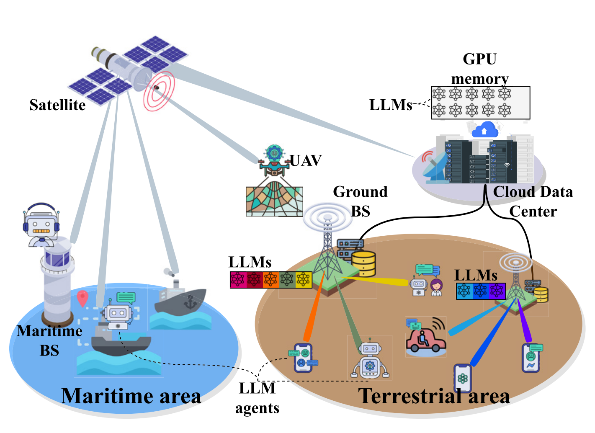
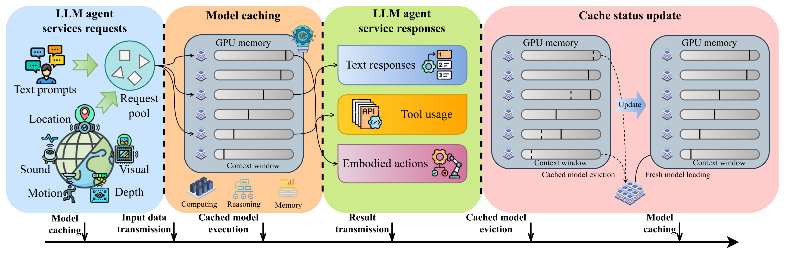
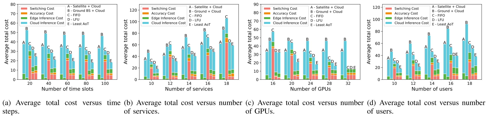
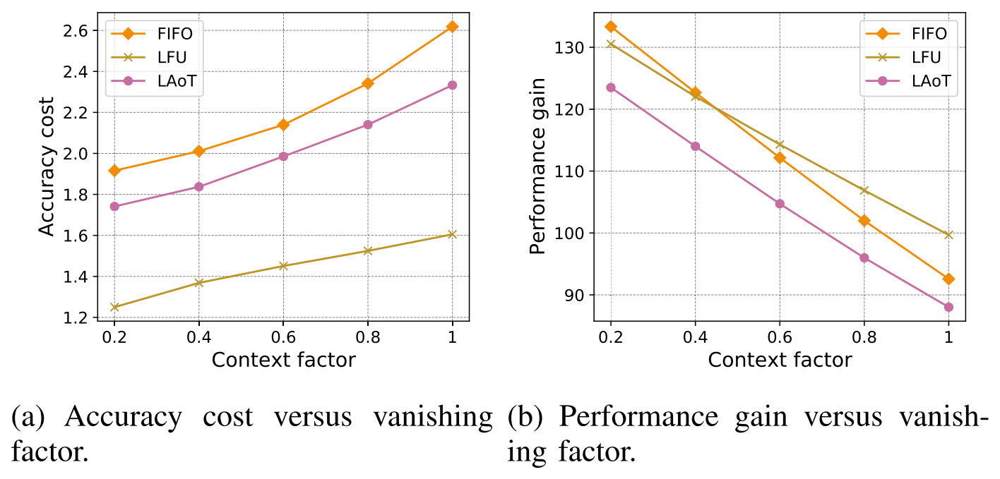
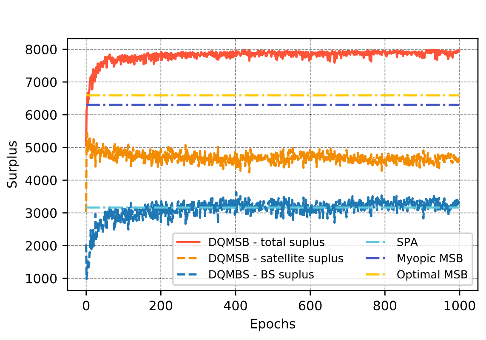
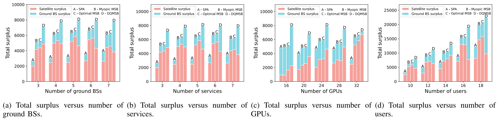

完整译文 · 原文逐段对照
英文在左，中文在右。每一栏按对应论文段落、公式、图表或算法配对；译者说明单独标识。
绿色：背景与直觉 蓝色：公式、算法与证明核对
论文全文 · 段落级中英文对照
缓存模型即资源：在空天地一体化网络中为大语言模型智能体提供边缘智能服务
Cached Model-as-a-Resource: Provisioning Large Language Model Agents for Edge Intelligence in Space–Air–Ground Integrated Networks
Minrui Xu, Member, IEEE, Dusit Niyato, Fellow, IEEE, Hongliang Zhang, Senior Member, IEEE, Jiawen Kang, Senior Member, IEEE, Zehui Xiong, Senior Member, IEEE, Shiwen Mao, Fellow, IEEE, and Zhu Han, Fellow, IEEE
作者：Minrui Xu、Dusit Niyato、Hongliang Zhang、Jiawen Kang、Zehui Xiong、Shiwen Mao、Zhu Han。
原 PDF p.1Abstract and Index Terms
摘要与关键词
Abstract—Edge intelligence in space-air-ground integrated networks (SAGINs) can enable worldwide network coverage beyond geographical limitations for users to access ubiquitous and lowlatency intelligence services. Facing global coverage and complex environments in SAGINs, edge intelligence can provision large language models (LLMs) agents for users via edge servers at ground base stations (BSs) or cloud data centers relayed by satellites. As LLMs with billions of parameters are pretrained on vast datasets, LLM agents have few-shot learning capabilities, e.g., chain-of-thought (CoT) prompting for complex tasks, which raises a new trade-off between resource consumption and performance in SAGINs. In this paper, we propose a joint caching and inference framework for edge intelligence to provision sustainable and ubiquitous LLM agents in SAGINs. We introduce “cached model-as-a-resource” for offering LLMs with limited context windows and propose a novel optimization framework, i.e., joint model caching and inference, to utilize cached model resources for provisioning LLM agent services along with communication, computing, and storage resources. We design “age of thought” (AoT) considering the CoT prompting of LLMs, and propose a least AoT cached model replacement algorithm for optimizing the provisioning cost. We propose a deep Q-network-based modified second-bid (DQMSB) auction to incentivize satellite/ground network operators in real-time, which can enhance allocation efficiency by 23% while guaranteeing strategy-proofness and being free from adverse selection.
空天地一体化网络（SAGINs）中的边缘智能可突破地理限制，实现全球网络覆盖，让用户获得泛在、低时延的智能服务。面对 SAGINs 的全球覆盖与复杂环境，边缘智能可以通过地面基站（BS）的边缘服务器、或由卫星中继的云数据中心，为用户供给大语言模型（LLM）智能体。由于具有数十亿参数、并在海量数据集上预训练的 LLM 具备少样本学习能力（例如面向复杂任务的思维链（CoT）提示），这在 SAGINs 中带来了资源消耗与性能之间的新权衡。本文提出一个面向边缘智能的联合缓存与推理框架，以在 SAGINs 中供给可持续、泛在的 LLM 智能体。我们引入“缓存模型即资源”（cached model-as-a-resource）来提供上下文窗口受限的 LLM，并提出一个新颖的优化框架，即联合模型缓存与推理，把缓存模型资源与通信、计算、存储资源一并用于供给 LLM 智能体服务。我们设计了考虑 LLM 的 CoT 提示的“思维年龄”（age of thought, AoT），并提出最小 AoT 缓存模型替换算法以优化供给成本。我们提出基于深度 Q 网络的修正第二价格投标（DQMSB）拍卖，实时激励卫星/地面网络运营商，该方法在保证策略防伪性且免于逆向选择的同时，可将分配效率提升 23%。
原 PDF p.1Index Terms—Space-air-ground integrated networks (SAGINs), edge intelligence, large language model (LLM) agents, auction theory, deep reinforcement learning (DRL).
关键词：空天地一体化网络（SAGINs）、边缘智能、大语言模型（LLM）智能体、拍卖理论、深度强化学习（DRL）。
原 PDF p.1I. INTRODUCTION
第一节 引言
SPACE-AIR-GROUND integrated networks (SAGINs) provide global network coverage and enable real-time edge intelligence services such as image recognition and data analysis [1]. Beyond terrestrial communication systems constrained by limited network capacity and ground-based station (BS) coverage, satellites relay computing services from cloud data centers and supply seamless connectivity in harsh environments, e.g., oceans and mountains [2]. Edge intelligence in SAGINs supports smart-ocean applications that range from real-time aquaculture monitoring to AI assistants for passengers, crew, and fishermen [3]. Recent advances in large language models (LLMs) [4], [5], [6] greatly enhance the capabilities of edge intelligence in SAGINs, enabling AI agents based on LLMs, i.e., LLM agents, to tackle unseen and complex reasoning tasks with various data modalities [7]. Moreover, SAGINs can provision low-latency and privacypreserving LLM agent services [7] at edge servers of ground BSs or at cloud data centers relayed by satellites, which act as autonomous assistants for daily life and work.
空天地一体化网络（SAGINs）提供全球网络覆盖，并支撑图像识别、数据分析等实时边缘智能服务 [1]。地面通信系统受限于网络容量与地面基站（BS）覆盖范围，而卫星可以中继来自云数据中心的计算服务，并在海洋、山地等恶劣环境中提供无缝连接 [2]。SAGINs 中的边缘智能支撑着从实时水产养殖监测到为乘客、船员与渔民提供 AI 助手等一系列智慧海洋应用 [3]。大语言模型（LLM）的最新进展 [4], [5], [6] 极大提升了 SAGINs 中边缘智能的能力，使得基于 LLM 的 AI 智能体（即 LLM 智能体）能够处理多种数据模态下未见过的复杂推理任务 [7]。此外，SAGINs 可以在地面基站的边缘服务器、或由卫星中继的云数据中心处，供给低时延且保护隐私的 LLM 智能体服务 [7]，这些智能体可作为日常生活与工作中的自主助手。
原 PDF p.1Built on billion-parameter models pre-trained on Internetscale corpora, LLM agents support few-shot learning [8], [9], encompassing in-context learning (ICL) for unseen tasks, chain-of-thought (CoT) prompting for complex reasoning, and role-playing under specific instructions. Although training and inference demand substantial computing resources, users with low-end mobile devices in SAGINs can invoke LLM services from edge servers at ground BSs or via satellite-backhauled cloud data centers. Therefore, heterogeneous deployment of LLM services in SAGINs reduces latency and safeguards user privacy [10], [11]. However, resource-limited edge servers cannot host every model concurrently [5]. Furthermore, fewshot performance is bounded by the context-window size dictated by each model architecture [12]. During inference, accumulated tokens initially enhance output but, once the window is filled [13], the quality of LLM responses deteriorates markedly.
LLM 智能体建立在对互联网规模语料预训练的数十亿参数模型之上，因而具备少样本学习能力 [8], [9]，包括面向未见任务的上下文学习（ICL）、面向复杂推理的思维链（CoT）提示，以及在特定指令下的角色扮演。尽管训练与推理都需要可观的算力资源，但 SAGINs 中使用低端移动设备的用户，仍可从地面基站的边缘服务器、或经卫星回传的云数据中心调用 LLM 服务。因此，在 SAGINs 中异构地部署 LLM 服务能够降低时延并保护用户隐私 [10], [11]。然而，资源受限的边缘服务器无法同时承载所有模型 [5]。进一步地，少样本性能还受制于由各模型架构决定的上下文窗口大小 [12]。在推理过程中，累积的 token 起初会提升输出质量，但一旦窗口被填满 [13]，LLM 回复的质量便会显著下降。
原 PDF p.1As the context windows of running LLMs can be depleted during provisioning LLM agent services, the cached models at edge servers of ground BSs should be considered as an unexplored type of resource analogous to conventional communication, computing, and storage resources [5]. To minimise provisioning cost, network operators must coordinate these local LLMs by accounting not only for hardware constraints but also for the context availability. Model caching, analogous to content caching, serves as an optimization framework for edge intelligence that lowers service latency and overall resource consumption. An effective framework must also incorporate the few-shot learning capability of LLMs [8], since each additional demonstration modifies both resource usage and inference quality. Furthermore, the economic value of service opportunities tends to be positively correlated across operators. Satellites, acting solely as relays between end users and cloud data centres, receive limited cost/performance feedback and therefore face significant information asymmetry relative to terrestrial BSs. This asymmetry can give rise to adverse selection [14] and result in inefficient operator allocation within real-time mechanisms. For instance, in maritime satellite communications, satellites typically offer flat-rate data plans without direct visibility into per-task GPU resource consumption, unlike coastal ground stations that precisely monitor real-time resource usage [1].
由于在供给 LLM 智能体服务的过程中，运行中 LLM 的上下文窗口会被耗尽，地面基站边缘服务器上的缓存模型应当被视为一类此前未被探讨的资源，它与传统的通信、计算、存储资源相类似 [5]。为最小化供给成本，网络运营商在调度这些本地 LLM 时，不仅要考虑硬件约束，还必须考虑上下文的可用性。类比内容缓存，模型缓存是一种面向边缘智能的优化框架，旨在降低服务时延与运营商的整体资源消耗。不过，面向 LLM 的模型缓存还必须纳入其少样本学习能力 [8]，因为每增加一个示例（demonstration），都会同时改变资源占用与推理质量。此外，各运营商获得服务机会的经济价值往往正相关。而卫星仅作为终端用户与云数据中心之间的中继，能获得成本/性能反馈有限，因而相对地面基站存在显著的信息不对称。这种不对称会引发逆向选择 [14]，导致实时机制中的运营商分配无效率。例如，在海事卫星通信中，卫星通常只提供包月（flat-rate）数据套餐，无法直接观测每任务的 GPU 资源消耗；而沿海地面站则能精确监测实时资源使用情况 [1]。
原 PDF p.2To address these challenges, in this paper, we propose a joint model-caching and inference framework that delivers sustainable, low-latency, and privacy-aware LLM-agent services throughout SAGINs. Depending on user location and resource conditions, LLMs execute on edge servers collocated with ground BSs or on cloud data centers reached via satellite or terrestrial relays. Ground BSs therefore furnish nearby users with prompt responses, whereas satellites extend coverage to remote oceans and mountains. To raise service quality, we elevate cached LLMs to first-class resources and formulate a joint caching-and-inference optimisation. Exploiting LLMs’ fewshot capability, we introduce the age-of-thought (AoT) metric to gauge the freshness and coherence of intermediate reasoning states. A least-AoT (LAoT) cache-replacement policy then removes the model with the largest AoT, thereby minimising provisioning cost for operators. Finally, we integrate a modified second-bid auction with a deep Q-network (DQMSB) that adaptively tunes the price-scaling factor, remains strategyproof, and eliminates adverse selection in satellite resource allocation.
为应对上述挑战，本文提出一个联合模型缓存与推理框架，在整个 SAGINs 范围内交付可持续、低时延且兼顾隐私的 LLM 智能体服务。依据用户位置与资源状况，LLM 在地面基站同址的边缘服务器上执行，或经卫星/地面中继在云数据中心执行。因此，地面基站为附近用户提供快速响应，卫星则将覆盖延伸至远洋与深山。为提升服务质量，我们把缓存的 LLM 提升为一等资源，并形式化一个联合缓存与推理的优化问题。利用 LLM 的少样本能力，我们引入思维年龄（AoT）指标，用以刻画中间推理状态的“新鲜度与连贯性”。随后，最小 AoT（LAoT）缓存替换策略淘汰 AoT 最大的模型，从而最小化运营商的供给成本。最后，我们把修正第二价格投标拍卖与深度 Q 网络（DQMSB）结合，自适应地调节价格缩放因子，在保持策略防伪性的同时消除卫星资源分配中的逆向选择。
原 PDF p.2Our main contributions can be summarized as follows.
我们的主要贡献可概括如下。
原 PDF p.2• We formulate a novel optimization framework for edge intelligence, i.e., the joint model caching and inference framework, to provision sustainable and ubiquitous LLM agents with satellites and ground BSs in SAGINs.
• In this framework, for the first time, we propose the concept of “cached model-as-a-resource” to implement edge intelligence, where cached models are regarded as a type of resource similar to conventional communication, computing, and storage resources, at edge servers at ground BSs, and cloud datacenters in SAGINs.
• We formulate the LLM agent provisioning problem for ground BSs to minimize total system cost under resource and coverage constraints. To tackle this problem effectively, we design a novel least AoT model caching algorithm to schedule loading and eviction of LLMs using the AoT, evaluating the relevance and coherence of intermediate thoughts in context windows.
• To maximize the revenue of network operators in provisioning high-quality LLM agent services, we propose the DQMSB auction, which can guarantee free of adverse selection and be fully strategy-proof, by using DRL to select the optimal pricing scaling factor.
The remaining sections of this paper are organized as follows. In Section II, we present a review of related work. In Section III, we describe the system model for provisioning LLM agents in SAGINs. In Section IV, we formulate the problem, propose the model caching algorithm, and design the market. In Section V, we propose the DQMSB auction. In Section VI, we present the simulation experiments. Finally, we conclude this paper in Section VII.
本文其余部分组织如下。第二节回顾相关工作；第三节描述 SAGINs 中供给 LLM 智能体的系统模型；第四节形式化问题、提出模型缓存算法并设计市场；第五节提出 DQMSB 拍卖；第六节给出仿真实验；第七节总结全文。
原 PDF p.2II. RELATED WORKS
第二节 相关工作
A. Edge Intelligence in Space-Air-Ground Integrated Networks
2.1 空天地一体化网络中的边缘智能
Provisioning AI services in SAGINs can significantly enhance the intelligent configuration and control of SAGINs to adapt to their environment, improving various performance metrics such as latency, energy usage, bandwidth, and realtime adaptability [1]. Xu et al. in [15] introduce a cloud-edge aggregated artificial intelligence architecture that leverages the on-orbit lightweight 5G core and edge computing platform provided by the Tiansuan constellation. For mission-critical 6G services, Hou et al. in [16] propose a three-layer architecture in SAGINs for ultra-reliable and low-latency edge intelligence that includes unikernel-based ultra-lightweight virtualization and microservice-based paradigms for prompt response and improved reliability. Considering the time-varying characteristics of content sources and the dynamic demands of users, Qin et al. in [17] propose a content service-oriented resource allocation algorithm that aims to achieve a stable matching based on users’ preferences for SAGINs.
在 SAGINs 中供给 AI 服务可显著增强 SAGINs 的智能配置与控制能力，使其适应环境，并改善时延、能耗、带宽、实时适应性等多项性能指标 [1]。Xu 等人在 [15] 中提出一种云边聚合的人工智能架构，利用天算星座提供的在轨轻量级 5G 核心网与边缘计算平台。针对任务关键的 6G 服务，Hou 等人在 [16] 中提出 SAGINs 中的三层架构，用于超可靠低时延边缘智能，其中包括基于 unikernel 的超轻量级虚拟化，以及基于微服务的范式，以实现快速响应并提升可靠性。考虑到内容源的时变特性与用户的动态需求，Qin 等人在 [17] 中提出一种面向内容服务的资源分配算法，旨在基于用户偏好为 SAGINs 实现稳定匹配。
原 PDF p.2B. Large Language Models for Edge Intelligence
2.2 面向边缘智能的大语言模型
In literature, LLMs are an essential part of next-generation edge intelligence systems, which have been leveraged to design, analyze, and optimize edge intelligence [18], [19]. For instance, Du et al. in [20] investigate the potential of LLMs as a valuable tool for FPGA-based wireless system development. Furthermore, Cui et al. in [21] introduce LLMind, an AI framework that integrates LLMs with domain-specific AI modules and IoT devices for executing complex tasks. In multi-agent systems for 6G communications, Jiang et al. [22] demonstrated the effectiveness of LLMs in collaborative data retrieval, planning, and reflection through a semantic communication case study. Considering the issues that traditional deep offloading architectures are facing several issues, including heterogeneous constraints, partial perception, uncertain generalization, and lack of traceability, Dong et al. [23] propose an LLM-based offloading framework that utilizes LLMs for offloading decisions, addressing issues like heterogeneous constraints and uncertain generalization. Nevertheless, the execution of LLMs usually requires enormous computing resources, which are infeasible for edge environments. Therefore, considering efficient training and inference architecture in 6G networks, Lin et al. in [24] explore feasible techniques such as split learning/inference, parameter-efficient fine-tuning, quantization, and parameter-sharing inference for pushing LLMs to the edge. Nevertheless, existing studies seldom examine how the freshness of cached LLMs affects network-wide cost; none of them couple freshness with spectrum, computing, and storage constraints in a unified optimization.
在已有文献中，LLM 是下一代边缘智能系统的重要组成部分，已被用于设计、分析与优化边缘智能 [18], [19]。例如，Du 等人在 [20] 中研究了 LLM 作为基于 FPGA 的无线系统开发工具的价值。此外，Cui 等人在 [21] 中提出 LLMind，一个将 LLM 与领域专用 AI 模块及 IoT 设备集成以执行复杂任务的 AI 框架。在面向 6G 通信的多智能体系统中，Jiang 等人 [22] 通过一个语义通信案例研究，展示了 LLM 在协同数据检索、规划与反思方面的有效性。针对传统深度卸载架构面临的多重问题——异构约束、部分感知、泛化不确定与缺乏可追溯性——Dong 等人 [23] 提出一种基于 LLM 的卸载框架，用 LLM 做卸载决策，以应对异构约束与泛化不确定等问题。然而，LLM 的执行通常需要巨大的计算资源，这对边缘环境而言并不可行。因此，着眼于 6G 网络中高效的训练与推理架构，Lin 等人在 [24] 中探索了拆分学习/推理、参数高效微调、量化以及参数共享推理等可行技术，以把 LLM 推向边缘。然而，现有研究很少考察缓存 LLM 的新鲜度如何影响全网成本；也没有任何工作在统一优化中把新鲜度与频谱、计算、存储约束耦合起来。
原 PDF p.2C. Auction Design for SAGINs
2.3 面向 SAGINs 的拍卖设计
Auctions are efficient and effective methods for real-time network resource allocation in SAGINs [25], [26], [27]. In civil aircraft augmented SAGINs, Chen et al. [28] propose a truthful double auction for device-to-device (D2D) communications and a reverse auction mechanism for spectrum sharing. For lightweight blockchain-based SAGINs, Yang et al. in [29] propose a secure sequential Vickrey auction mechanism to ensure secure and reliable spectrum sharing within the SAGINs. However, the current auctions treat communication and computing costs as exogenous and overlook the fact that valuation depends on model freshness and token-level usage statistics, which are observable only at ground stations and not at satellites. This is a gap that motivates our deep-Q-network modified-second-bid (DQMSB) design. Therefore, in this paper, we propose DQMSB that can mitigate adverse selection and increase market efficiency for SAGINs with DQN-based price scaling factor selection.
拍卖是 SAGINs 中实现实时网络资源分配的高效且有效的方法 [25], [26], [27]。在民用航空器增强的 SAGINs 中，Chen 等人 [28] 提出面向设备到设备（D2D）通信的真实（truthful）双向拍卖，以及用于频谱共享的逆向拍卖机制。面向轻量级区块链化 SAGINs，Yang 等人在 [29] 中提出一种安全的顺序 Vickrey 拍卖机制，以确保 SAGINs 内安全可靠的频谱共享。然而，现有拍卖把通信与计算成本视为外生给定，忽略了估值实际上取决于模型新鲜度与 token 级使用统计——而这些只有地面站能观测到，卫星观测不到。这一空白正是我们设计基于深度 Q 网络的修正第二价格投标（DQMSB）的动因。因此，本文提出 DQMSB，通过基于 DQN 的价格缩放因子选择，缓解逆向选择并提升 SAGINs 的市场效率。
原 PDF p.3III. SYSTEM MODEL
第三节 系统模型
For edge intelligence in SAGINs, each group of users would like to utilize LLM agents based on one or several LLMs. In the system, each group of users can use one LLM agent as their active assistant because their attention is limited depending on their preferences and current tasks. In SAGINs, a group of users needs to select network providers, including satellites and ground BSs, to access LLM agent services. As shown in Fig. 1, the system consists of N + 1 network operators, including one or several Low Earth Orbit (LEO) satellites in orbit and multiple ground BSs equipped with edge servers, all connected to the cloud data center via backhaul links. The set of network operators is represented by N = {0,1,...,N}, where the LEO satellite is represented by 0 and the set of BSs is represented by {1,...,N}. The edge servers at ground BSs can execute LLM agent services for users while the rest of the services can be offloaded to cloud data centers with the relay of satellites or ground BSs. We use the set I = {1,2,...,I} to denote the available LLM agent services based on the set of LLMs M = {1,...,M}. As LLMs are capable of performing multiple downstream tasks in LLM agent services simultaneously, it is considered that the number of LLM agent services is far greater than the number of LLMs [7], i.e., I ≫ M. In the group of users Un covered by network operator n, Rnt = {Rnt ,i,m|i ∈ I,m ∈ M} is used to represent the number of requests generated by LLM agent service i to execute LLM m for its specific functions, including planning, memory, tool-using, and embodied actions. Initially, the size of input data of LLM agent service i can be denoted as di. Additionally, the configuration of LLM m consists of the amount of runtime GPU memory, which is proportion to model size sm, the computation required per token em, and the size of context window wm.
对于 SAGINs 中的边缘智能，每一组用户都希望使用基于一个或若干个 LLM 的 LLM 智能体。在系统中，每组用户只能把一个 LLM 智能体作为其活跃助手，因为受偏好与当前任务影响，他们的注意力是有限的。在 SAGINs 中，一组用户需要选择网络提供方（包括卫星与地面基站）来接入 LLM 智能体服务。如图 1 所示，系统由 \(N+1\) 个网络运营商组成，包括在轨的一颗或数颗低轨（LEO）卫星，以及多个配备边缘服务器的地面基站，它们都通过回传链路连接到云数据中心。网络运营商集合记为 \(\mathcal{N}=\{0,1,\dots,N\}\)，其中 LEO 卫星用 \(0\) 表示，基站集合用 \(\{1,\dots,N\}\) 表示。地面基站的边缘服务器可为用户执行 LLM 智能体服务，其余服务则可借助卫星或地面基站的中继卸载到云数据中心。我们用集合 \(\mathcal{I}=\{1,2,\dots,I\}\) 表示基于 LLM 集合 \(\mathcal{M}=\{1,\dots,M\}\) 的可用 LLM 智能体服务。由于 LLM 能够在 LLM 智能体服务中同时执行多个下游任务，因此认为 LLM 智能体服务的数量远大于 LLM 的数量 [7]，即 \(I\gg M\)。在网络运营商 \(n\) 覆盖的用户组 \(\mathcal{U}_n\) 中，用 \(R^t_n=\{R^t_{n,i,m}\,|\,i\in\mathcal{I},m\in\mathcal{M}\}\) 表示 LLM 智能体服务 \(i\) 为执行其特定功能（包括规划、记忆、工具使用与具身动作）而对 LLM \(m\) 产生的请求数量。初始时，LLM 智能体服务 \(i\) 的输入数据量记为 \(d_i\)。此外，LLM \(m\) 的配置由三部分组成：与模型规模 \(s_m\) 成正比的运行时 GPU 显存占用量、每 token 所需的计算量 \(e_m\)，以及上下文窗口大小 \(w_m\)。
原 PDF p.3
Fig. 1. Joint caching and inference framework for provisioning large language model (LLM) agents in SAGINs.
图 1 在空天地一体化网络（SAGINs）中为大语言模型（LLM）智能体提供服务的联合缓存与推理框架。
原 PDF p.3A. Coverage Time Model
3.1 覆盖时间模型
The coverage time model for LEO satellite networks addresses the dynamic positioning of satellites concerning users. Unlike terrestrial networks, whose infrastructure remains stationary, LEO satellites exhibit constant motion, necessitating that users establish connections based on specific geometric metrics [2]. These metrics include the altitude l of the LEO satellite orbit above the mobile user, the Earth’s radius E, and the slant distance s from users to the LEO satellites. The elevation angle θe, delineating the line of sight between a mobile user and an LEO satellite, is determined by e (E+l) g g θ = arccos s ·sinθ , where θ represents the geocentric angle covering the LEO satellite’s service area, calculated as ( ) θg = arccos EE+l · cosθe − θe. Let vS denote the velocity of LEO satellite 0. The maximal communication duration T0S between a mobile user and the LEO satellite is given by
LEO 卫星网络的覆盖时间模型处理的是卫星相对于用户的动态位置问题。与基础设施静止不动的地面网络不同，LEO 卫星持续运动，因此用户必须依据特定的几何量来建立连接 [2]。这些量包括 LEO 卫星轨道相对移动用户的高度 \(l\)、地球半径 \(E\)，以及用户到 LEO 卫星的斜距 \(s\)。描述移动用户与 LEO 卫星之间视线的仰角 \(\theta^e\) 由 \(\theta^e=\arccos\!\left(\frac{E+l}{s}\right)\cdot\sin\theta^g\) 确定；其中 \(\theta^g\) 表示覆盖 LEO 卫星服务区域的地心角，计算为 \(\theta^g=\arccos\!\left(\frac{E}{E+l}\right)\cdot\cos\theta^e-\theta^e\)。设 \(v^S\) 表示 LEO 卫星 0 的速度，则移动用户与该 LEO 卫星之间的最大通信时长 \(T^S_0\) 为
原 PDF p.3where L = 2θg(E + l) is the arc length over which communication with the LEO satellite is available for users. Due to its intermediary role as a relay node, a LEO satellite has inherently limited observability regarding cloud-side resource consumption and service-level metrics. Conversely, ground base stations directly interact with computational resources, thus obtaining precise real-time measurements. Consequently, satellite operators’ valuations become positively correlated but privately uncertain, increasing the risk of adverse selection in resource allocation.
其中 \(L=2\theta^g(E+l)\) 是用户可与该 LEO 卫星通信的弧长。由于卫星作为中继节点这一中介角色，它对云侧资源消耗与服务级指标的可观测性天然有限。相反，地面基站直接与计算资源交互，因而能获得精确的实时测量。因此，卫星运营商的估值变得正相关但各自私有地不确定，从而增加了资源分配中逆向选择的风险。
原 PDF p.3
Fig. 2. The workflow of the joint caching and inference framework for provisioning LLM agents with cached models.
图 2 使用缓存模型为 LLM 智能体提供服务的联合缓存与推理框架工作流。
原 PDF p.4B. Communication Model
3.2 通信模型
To facilitate interaction with LLM agents, a group of users covered by network operator n, denoted by Un, can access services through network operator n for data transmission. These users share the same spectral resources, resulting in mutual interference among them [3]. The channel power gain from mobile user u ∈ Un to LEO satellite 0, accounting for large-scale fading and shadowed-Rician fading, is represented by gu,0 [30]. Similarly, gu,n represents the channel power gain from mobile user u to ground BS n = 1,...,N, incorporating large-scale fading and Rayleigh fading for terrestrial communications. The bandwidth allocated by satellite 0 and ground BSs n = 1,2,...,N, is denoted as B0 and Bn, respectively. Consequently, the uplink transmission rate for user u ∈ Un to transmit input data of LLM agent services to network operators is given by
为便于与 LLM 智能体交互，网络运营商 \(n\) 所覆盖的一组用户（记为 \(\mathcal{U}_n\)）可以通过运营商 \(n\) 接入服务进行数据传输。这些用户共享同一频谱资源，因此彼此之间存在干扰 [3]。从移动用户 \(u\in\mathcal{U}_n\) 到 LEO 卫星 0 的信道功率增益（同时考虑大尺度衰落与阴影莱斯（shadowed-Rician）衰落）记为 \(g_{u,0}\) [30]。类似地，\(g_{u,n}\) 表示从移动用户 \(u\) 到地面基站 \(n=1,\dots,N\) 的信道功率增益，对地面通信而言包含大尺度衰落与瑞利衰落。卫星 0 与地面基站 \(n=1,2,\dots,N\) 所分配的带宽分别记为 \(B_0\) 与 \(B_n\)。于是，用户 \(u\in\mathcal{U}_n\) 把 LLM 智能体服务的输入数据上行传输给网络运营商的速率为
原 PDF p.4where pu is the transmit power of user u and σ2 is the power of the additive white Gaussian noise (AWGN). The satellite serves as an intermediary in providing LLM agent services between mobile users and cloud data centers via the satellite backbone network [31], with the transmission rate denoted by r0C. Moreover, ground BSs n = 1,2,...,N connect to cloud data centers through the terrestrial core network with a fixed transmission rate rnC.
其中 \(p_u\) 是用户 \(u\) 的发射功率，\(\sigma^2\) 是加性高斯白噪声（AWGN）功率。卫星在移动用户与云数据中心之间充当 LLM 智能体服务的中介，经由卫星骨干网 [31] 传输，其传输速率记为 \(r^C_0\)。此外，地面基站 \(n=1,2,\dots,N\) 通过地面核心网连接到云数据中心，具有固定传输速率 \(r^C_n\)。
原 PDF p.4C. Model Caching for LLM Agent Services
3.3 面向 LLM 智能体服务的模型缓存
To facilitate the provisioning of LLM agent services in SAGINs, we introduce a joint model caching and inference framework that enables edge servers located at ground BSs to cache LLMs and offload requests, optimizing the utilization of edge computing resources to provision LLM agent services for users, as shown in Fig. 2. Specifically, ground BSs n = 1,...,N are tasked with determining local caching and offloading strategies. Here, atn,i,m ∈ {0,1} represents the binary variable that indicates whether model m for service i is cached at ground BS n during time slot t, and btn,i,m ∈ [0,1] signifies the continuous variable reflecting the proportion of model m for service i being executed at ground BS n at time slot t. Let atn = {atn,1,1,...,atn,I,M} encapsulate the model caching decisions at ground BS n, with at = {at1,...,atN} aggregating these decisions across all network operators. Furthermore, the request offloading decision for ground BS n is denoted by btn = {btn,1,1,...,btn,I,M}, while bt = {bt1,...,btN} represents the collective offloading decisions of ground BSs n = 1,...,N. To extend the coverage of ground communication systems, satellite 0 with limited computing and energy resources acts as a relay between users and cloud data centers, whose model caching decisions are at0 = 0 and request offloading decisions are bt0 = 0, i.e., all the LLM agent services are offloaded to cloud data centers for remote executing relayed by satellite 0.
为便于在 SAGINs 中供给 LLM 智能体服务，我们引入一个联合模型缓存与推理框架，使位于地面基站的边缘服务器能够缓存 LLM 并卸载请求，从而优化边缘计算资源的利用，为用户供给 LLM 智能体服务，如图 2 所示。具体而言，地面基站 \(n=1,\dots,N\) 负责确定本地的缓存与卸载策略。这里 \(a^t_{n,i,m}\in\{0,1\}\) 是二值变量，表示时隙 \(t\) 上模型 \(m\)（用于服务 \(i\)）是否被缓存在地面基站 \(n\)；而 \(b^t_{n,i,m}\in[0,1]\) 是连续变量，表示时隙 \(t\) 上在地面基站 \(n\) 执行的服务 \(i\) 的模型 \(m\) 所占比例。记 \(\mathbf{a}^t_n=\{a^t_{n,1,1},\dots,a^t_{n,I,M}\}\) 为地面基站 \(n\) 的模型缓存决策，\(\mathbf{a}^t=\{\mathbf{a}^t_1,\dots,\mathbf{a}^t_N\}\) 为全部网络运营商的缓存决策汇总。类似地，地面基站 \(n\) 的请求卸载决策记为 \(\mathbf{b}^t_n=\{b^t_{n,1,1},\dots,b^t_{n,I,M}\}\)，而 \(\mathbf{b}^t=\{\mathbf{b}^t_1,\dots,\mathbf{b}^t_N\}\) 表示地面基站 \(n=1,\dots,N\) 的卸载决策整体。为扩展地面通信系统的覆盖，计算与能量资源有限的卫星 0 充当用户与云数据中心之间的中继，其模型缓存决策为 \(\mathbf{a}^t_0=\mathbf{0}\)，请求卸载决策为 \(\mathbf{b}^t_0=\mathbf{0}\)，即所有 LLM 智能体服务都由卫星 0 中继卸载到云数据中心远程执行。
原 PDF p.4For edge intelligence in SAGINs, LLM agent services requested by users can be executed at edge servers at ground BSs when the required LLMs are cached into GPUs. Let Gn denote the GPU computing capacity in terms of GPU memory of ground BS n. Then, the decision of model caching atn should satisfy the following constraint at time slot t for ground BS n = 1,...,N, as
对于 SAGINs 中的边缘智能，当所需 LLM 被缓存进 GPU 后，用户请求的 LLM 智能体服务便可在地面基站的边缘服务器上执行。设 \(G_n\) 表示地面基站 \(n\) 以 GPU 显存计的 GPU 计算容量，则地面基站 \(n=1,\dots,N\) 的模型缓存决策 \(\mathbf{a}^t_n\) 在时隙 \(t\) 上应满足如下约束：
原 PDF p.4where sm is the running size of model m. This indicates that the edge servers cannot load all the LLMs into GPUs as the computing resources at edge servers are constrained. After the models are loaded into the GPUs of edge servers, LLM agent services can be executed at the ground BSs. Therefore, the constraint of LLM agent service provisioned at ground BS n = 1,...,N, is represented as
其中 \(s_m\) 是模型 \(m\) 的运行规模。这表明：由于边缘服务器的计算资源受限，边缘服务器无法把所有 LLM 都加载进 GPU。在模型被加载进边缘服务器的 GPU 之后，LLM 智能体服务便可在地面基站执行。因此，地面基站 \(n=1,\dots,N\) 上所供给的 LLM 智能体服务的约束表示为
原 PDF p.4where 1(·) is the indicator function and 1(Rnt ,i,m > 0) indicates that there are requests of LLM agent service i for model m at BS n at time slot t. Finally, the total computing power consumption of edge servers is constrained by the total computing capacity of GPUs at ground BS n = 1,...,N, which can be represented as
其中 \(\mathbf{1}(\cdot)\) 是指示函数，\(\mathbf{1}(R^t_{n,i,m}\gt 0)\) 表示基站 \(n\) 在时隙 \(t\) 上存在对服务 \(i\) 的模型 \(m\) 的请求。最后，边缘服务器的总计算功率消耗受地面基站 \(n=1,\dots,N\) 的 GPU 总计算容量约束：
原 PDF p.4Nevertheless, in cloud data centers, it could be assumed that there is no GPU memory constraint or computing capacity constraint for executing LLMs.
不过在云数据中心，可以假设执行 LLM 既没有 GPU 显存约束，也没有计算容量约束。
原 PDF p.5D. Chain-of-Thought Inference Model
3.4 思维链推理模型
To improve the relevance and coherence of LLM agents, LLMs can leverage CoT prompting to perform step-by-step reasoning before obtaining the final response [32]. As an advanced inference approach to elicit the emerging abilities of LLMs, CoT prompting allows LLMs to generate a sequence of intermediate reasoning steps towards problem-solving or concluding, instead of attempting to solve the entire problem in merely zero-shot manner. During inference of LLMs, given any task description prompt d, LLM m can generate an answer by recursively predicting the sequence of next tokens from the learned distribution pm conditioned on the concatenation of d and of the tokens sampled so far. For all sequences of messages in LLM agent service i, Di = {di,0,...,di,k} of at most wm tokens, the pm(Di) follows the general product rule of probability [33], i.e.,
为提升 LLM 智能体的相关性与连贯性，LLM 可以利用 CoT 提示在给出最终回复之前进行逐步推理 [32]。作为一种激发 LLM 涌现能力的先进推理方式，CoT 提示让 LLM 生成一串朝向问题求解或结论的中间推理步骤，而不是仅以零样本（zero-shot）方式试图一次性解决整个问题。在 LLM 推理过程中，给定任意任务描述提示 \(d\)，LLM \(m\) 可以通过从学到的分布 \(p_m\) 中递归地预测下一个 token 序列来生成回答，其条件为 \(d\) 与至今已采样 token 的拼接。对于 LLM 智能体服务 \(i\) 中最多 \(w_m\) 个 token 的所有消息序列 \(D_i=\{d_{i,0},\dots,d_{i,k}\}\)，\(p_m(D_i)\) 服从概率的一般乘积法则 [33]，即
原 PDF p.5which is a good approximation of the true distribution qˆ(Di).
它是对真实分布 \(\hat{q}(D_i)\) 的一个良好近似。
原 PDF p.5For each CoT prompt in LLM agent service i, LLM m is provided with ci varying length CoT examples Ei = {ei,0,...,ei,k} and each thought ei,k in Ei is a sequence of ki tokens representing one reasoning step. Those examples are designed to aid the LLMs in producing correct answers via CoT generation and thus for service i, Ei are generated with true intentions θ⋆ and true context c⋆. To serve LLM agent service i, for the given Ei and a task di,0, LLMs then generate (di,1,...,di,k) messages. To evaluate the performance of the approximation of LLMs, we have the following definition.
对于 LLM 智能体服务 \(i\) 中的每个 CoT 提示，LLM \(m\) 会被提供 \(c_i\) 个长度不一的 CoT 示例 \(E_i=\{e_{i,0},\dots,e_{i,k}\}\)，其中 \(E_i\) 中的每个思维 \(e_{i,k}\) 是一个由 \(k_i\) 个 token 组成的序列，代表一个推理步骤。这些示例旨在帮助 LLM 通过 CoT 生成给出正确答案；因此对服务 \(i\) 而言，\(E_i\) 是依真实意图 \(\theta^\star\) 与真实上下文 \(c^\star\) 生成的。为服务 LLM 智能体服务 \(i\)，在给定 \(E_i\) 与任务 \(d_{i,0}\) 的条件下，LLM 随后生成消息 \((d_{i,1},\dots,d_{i,k})\)。为评估 LLM 近似的性能，我们给出如下定义。
原 PDF p.5Definition 1 (ε-ambiguity [33]): For CoT examples Ei of LLM service i generated based on true context c⋆ and true intention θ⋆, the ambiguity of the chain ε(Ei) is defined as the complement of the likelihood of the context c⋆ and intentions θ⋆ conditioned on CoT examples Ei, i.e.,
定义 1（\(\epsilon\)-歧义度 [33]）：对于基于真实上下文 \(c^\star\) 与真实意图 \(\theta^\star\) 生成的 LLM 服务 \(i\) 的 CoT 示例 \(E_i\)，链的歧义度 \(\epsilon(E_i)\) 定义为：在给定 CoT 示例 \(E_i\) 的条件下，上下文 \(c^\star\) 与意图 \(\theta^\star\) 的似然的补，即
原 PDF p.5In addition to the ambiguous definition of LLMs, we define the quality of contexts in training datasets as follows.
除了 LLM 的歧义度定义之外，我们如下定义网络运营商训练数据集中上下文的质量。
原 PDF p.5Definition 2: To account for the potentially non-uniform distribution of contexts in training datasets at network operators, we introduce a skewness parameter γn(c⋆) for each network operator n, which is defined as
定义 2：为刻画网络运营商处训练数据集中上下文可能非均匀的分布，我们为每个网络运营商 \(n\) 引入一个偏斜参数 \(\gamma_n(c^\star)\)，定义为
原 PDF p.5where cn is the context owned by network operator n.
其中 \(c_n\) 是网络运营商 \(n\) 所拥有的上下文。
原 PDF p.5Ground BSs can collect the context during their provisioning of LLM agent services, which satisfies the preference of their local users. Therefore, we have the following assumption.
地面基站可以在供给 LLM 智能体服务的过程中收集上下文，而这些上下文满足其本地用户的偏好。因此我们有以下假设。
原 PDF p.5Assumption 1: The prior distribution associated with true contexts c⋆ is uniform.
假设 1：与真实上下文 \(c^\star\) 相关联的先验分布是均匀的。
原 PDF p.5Based on the uniform context considered in Assumption 1, γn(c⋆) = 1 guarantees small values or provides CoT examples that should have small enough ambiguity, so the model with high certainty could guess the true context c⋆ from them [34]. Following Definition 2, we can estimate the difference of ambiguity measurements between the learned distribution pm and the true distribution qˆ, conditioned on input messages Di of service i, as follows.
基于假设 1 所考虑的均匀上下文，\(\gamma_n(c^\star)=1\) 保证了较小的取值，或者提供了应当具有足够小歧义度的 CoT 示例，从而使得具有高确定性的模型能够从中猜出真实上下文 \(c^\star\) [34]。依据定义 2，我们可以如下估计：在给定服务 \(i\) 的输入消息 \(D_i\) 的条件下，学到的分布 \(p_m\) 与真实分布 \(\hat{q}\) 之间歧义度度量之差。
原 PDF p.5Theorem 1: Considering a collection of ci varying length CoT examples, which are generated from the intention θ⋆ with the optimal context c⋆ sampled from qm(c) that satisfies Assumption 1. Furthermore, let di,0 be the input message or task sampled from q(·|θ0⋆), which is generated from θ0⋆ sampled from qm(·|c⋆). Then, for any sequence of messages Di, we have
定理 1：考虑 \(c_i\) 个长度不一的 CoT 示例，它们由意图 \(\theta^\star\) 与从满足假设 1 的 \(q_m(c)\) 中采样的最优上下文 \(c^\star\) 生成。进一步，设 \(d_{i,0}\) 为从 \(q(\cdot|\theta^\star_0)\) 中采样的输入消息或任务，而 \(\theta^\star_0\) 从 \(q_m(\cdot|c^\star)\) 中采样得到。那么，对任意消息序列 \(D_i\)，有
原 PDF p.5where \(\eta=2\frac{\epsilon(d_{i,0})}{1-\epsilon(d_{i,0})}\) depends on the ambiguity of the input.
其中 \(\eta=2\frac{\epsilon(d_{i,0})}{1-\epsilon(d_{i,0})}\)，取决于输入的歧义度。
原 PDF p.5Proof: We provide a simplified proof to show how to obtain this bound with the necessary steps and the complete proof can be found in [34]. Starting from pm(Di|di,0,Ei), we have
证明：我们给出一个简化证明以展示如何以必要的步骤得到该界，完整证明可参见 [34]。从 \(p_m(D_i|d_{i,0},E_i)\) 出发，我们有
原 PDF p.5where Λ and Υ are given by
其中 \(\Lambda\) 与 \(\Upsilon\) 由下式给出
原 PDF p.5By leveraging the definition of ambiguity measure for CoT example Ei,y, we can establish the following bounds on Λ and Υ as
利用 CoT 示例 \(E_{i,y}\) 的歧义度度量定义，我们可以对 \(\Lambda\) 与 \(\Upsilon\) 建立如下界：
原 PDF p.5Finally, combining the above components, we have
最后，把上述各部分组合起来，我们有
原 PDF p.5where \(\eta=2\gamma_n^{c_i}(c^\star)\frac{\epsilon(d_{i,0})}{1-\epsilon(d_{i,0})}\), following Assumption 1 and indicating that \(\gamma_n(c^\star)=1\) and thus \(\eta=2\frac{\epsilon(d_{i,0})}{1-\epsilon(d_{i,0})}\). □
其中 \(\eta=2\gamma_n^{c_i}(c^\star)\frac{\epsilon(d_{i,0})}{1-\epsilon(d_{i,0})}\)；依假设 1 可知 \(\gamma_n(c^\star)=1\)，从而 \(\eta=2\frac{\epsilon(d_{i,0})}{1-\epsilon(d_{i,0})}\)。∎
原 PDF p.6Theorem 1 indicates that the LLM prompted with CoT example Ei is capable of approximating the true natural language distribution equipped with true context and intentions.
定理 1 表明：被 CoT 示例 \(E_i\) 提示的 LLM 能够逼近装备了真实上下文与意图的真实自然语言分布。
原 PDF p.6Assumption 2: The CoT example Ei generated from θ⋆ with a context c⋆ ∼ q(c) is bounded by the ambiguity measure, i.e.,
假设 2：由 \(\theta^\star\) 以上下文 \(c^\star\sim q(c)\) 生成的 CoT 示例 \(E_i\) 受歧义度度量约束，即
原 PDF p.6where \(\sigma\in[0,\frac12]\).
其中 \(\sigma\in\left[0,\frac12\right]\)。
原 PDF p.6Assumption 2 implies that when carefully selected, CoT examples Ei and the true context c⋆ can be recovered from Ei with reasonably high certainty, i.e., the probability the c⋆ is behind Ei is strictly greater than on a half. Given such CoT examples, we can transform the bound in Theorem 1 into a geometrical convergence rate with the number of examples growing large as
假设 2 意味着：若精心选择，CoT 示例 \(E_i\) 与真实上下文 \(c^\star\) 能以相当高的确定性从 \(E_i\) 中恢复，即 \(c^\star\) 藏在 \(E_i\) 背后的概率严格大于一半（原文：strictly greater than on a half）。给定这样的 CoT 示例，我们可以把定理 1 的界转化为随示例数增长而收敛的几何速率：
原 PDF p.6where the CoT gain is \(\beta=\frac{\sigma}{1-\sigma}\in[0,1)\). Those examples described in Assumption 2 should be carefully selected to guarantee low ambiguity requirements. In practice, however, it can be challenging to collect such chain-of-thought examples, as there can be an assumption that allows us to measure ambiguity for a given sequence of thoughts as below.
其中 CoT 增益为 \(\beta=\frac{\sigma}{1-\sigma}\in[0,1)\)。假设 2 中描述的这些示例应当被仔细挑选，以保证较低的歧义度要求。然而在实践中，收集这样的思维链示例可能颇具挑战；因此可以有如下假设，使我们能够对给定的思维序列度量歧义度。
原 PDF p.6Assumption 3: For the CoT examples Ei generated from true intentions θ⋆ with the true context context c⋆ ∼ q(c), the associated ambiguity measure ε(Ei) vanishes as the length of sequence grows large as
假设 3：对于由真实意图 \(\theta^\star\) 与真实上下文 \(c^\star\sim q(c)\) 生成的 CoT 示例 \(E_i\)，其关联的歧义度度量 \(\epsilon(E_i)\) 随序列长度增大而消失：
原 PDF p.6Assumption 3 implies that uncertainty over true context c⋆ and true intentions θ⋆ for a sequence of thoughts is diminishing when more of these thoughts are collected. Therefore, for long enough CoT examples, the asymptotic requirement is sufficient to guarantee a low ambiguity measure. Satisfying Assumption 3, we have the following lemma.
假设 3 意味着：当收集到更多这样的思维时，关于真实上下文 \(c^\star\) 与真实意图 \(\theta^\star\) 的不确定性会逐渐减小。因此，对于足够长的 CoT 示例，该渐近要求足以保证较低的歧义度度量。满足假设 3 时，我们有如下引理。
原 PDF p.6Lemma 1: Considering CoT examples \(E_i\) for any fixed \(\sigma\in[0,\frac12)\) there is a length threshold \(k^\star_{i,\sigma}\in\mathbb N\). For any \(k_i\ge k^\star_{i,\sigma}\), we have
引理 1：考虑 CoT 示例 \(E_i\)，对任意固定的 \(\sigma\in\left[0,\frac12\right)\)，存在一个长度阈值 \(k^\star_{i,\sigma}\in\mathbb{N}\)。对任意 \(k_i\ge k^\star_{i,\sigma}\)，有
原 PDF p.6Proof: By selecting \(\sigma\in[0,\frac12)\), CoT examples \(E_i\) following Assumption 3 have the approximation that \(\lim_{l\to\infty}\epsilon(E_i)=0\). Then, there exists \(k^\star_{i,\sigma}\in\mathbb N\) such that for any \(k_i\ge k^\star_{i,\sigma}\), the inequality \(\epsilon(E_i)\le\sigma\) holds. □
证明：选取 \(\sigma\in\left[0,\frac12\right)\)，服从假设 3 的 CoT 示例 \(E_i\) 具有近似 \(\lim_{l\to\infty}\epsilon(E_i)=0\)。于是存在 \(k^\star_{i,\sigma}\in\mathbb{N}\)，使得对任意 \(k_i\ge k^\star_{i,\sigma}\)，不等式 \(\epsilon(E_i)\le\sigma\) 成立。∎
原 PDF p.6Based on Lemma 1, the geometrical convergence rate in Eq. (15) can be established when the LLM is prompted with CoT examples Ei of sufficient length, i.e., ki ≥ ki⋆,σ following Assumption 3. In contrast to the low ambiguity requirement, CoT examples with low asymptotic ambiguity can be more attainable. Therefore, during the step-by-step inference of LLMs, the original CoT examples Ei satisfying Assumption 3 can be split or divided into different lengths and sizes of ′ [ 1 thoughts Ei following the required threshold σ ∈ 0, 2), which can be more refined reasoning steps with predefined ambiguity. LLMs, such as GPT-3, can perform CoT prompting which indicates that they can learn from past CoT examples for complex tasks presented to them. The intermediate thoughts can be used to enhance the performance of LLM agents, as LLMs can use meta-gradient learning during interaction to fit them [35]. However, depending on the relevance and coherence of intermediate thoughts, few-shot learning may have favorable or unfavorable impacts on the model performance. Based on the caching decision atn,i,m and offloading decision bn,i,m, the batch of requests executed as ground BS n can be calculated as δnt,i,m = atn,i,m(1−btn,i,m)Rnt ,i,mki for service i and model m, where ki is the size of CoT examples for service i which can be estimated via Lemma 1. In general, the number of thoughts increases monotonically when the LLM is cached into the edge servers, which can be represented as
基于引理 1，当 LLM 被提示以长度充分的 CoT 示例 \(E_i\)（即依假设 3 有 \(k_i\ge k^\star_{i,\sigma}\)）时，式 (15) 中的几何收敛率便可成立。与“低歧义度”要求相比，“低渐近歧义度”的 CoT 示例更容易获得。因此，在 LLM 的逐步推理过程中，满足假设 3 的原始 CoT 示例 \(E_i\) 可以按照所需阈值 \(\sigma\in\left[0,\frac12\right)\) 拆分或划分为不同长度与规模的思维 \(E'_i\)，从而成为具有预定义歧义度的更细粒度推理步骤。诸如 GPT-3 之类的 LLM 能够进行 CoT 提示，这意味着它们可以从呈现给它们的、面向复杂任务的过往 CoT 示例中学习。中间思维可用于提升 LLM 智能体的性能，因为 LLM 可以在交互过程中使用元梯度学习来拟合它们 [35]。然而，取决于中间思维的相关性与连贯性，少样本学习对模型性能可能产生有利或不利的影响。基于缓存决策 \(a^t_{n,i,m}\) 与卸载决策 \(b_{n,i,m}\)，地面基站 \(n\) 所执行的请求批次可计算为 \(\delta^t_{n,i,m}=a^t_{n,i,m}(1-b^t_{n,i,m})R^t_{n,i,m}k_i\)，对应服务 \(i\) 与模型 \(m\)，其中 \(k_i\) 是服务 \(i\) 的 CoT 示例规模，可通过引理 1 估计。一般而言，当 LLM 被缓存进边缘服务器时，思维数量会单调增加，可表示为
原 PDF p.6Similar to the definition of age of information (AoI), the AoT measures the freshness of intermediate thoughts within the cached LLMs for the current inference requests. With a vanishing factor ∆ti,m of thoughts, the AoT is adjusted by the non-increasing age utility function, which is represented as
类似于信息年龄（AoI）的定义，AoT 度量的是缓存 LLM 内部、面向当前推理请求的中间思维的新鲜度。借助思维的衰减因子 \(\Delta^t_{i,m}\)，AoT 由非增的年龄效用函数调整，表示为
原 PDF p.6According to the AoT, the weighted total of the number of examples in demonstrations may be used to determine the number of examples in context. The AoT metric is computationally lightweight and practically implementable without internal modifications to the LLM inference process. Calculation involves only maintaining two integer counters per cached model—the accumulated length of reasoning tokens and the current AoT score. Updating these counters upon inference completion incurs negligible computational overhead, as it only requires two integer additions and one comparison operation. This procedure leverages data (timestamps, token counts) inherently generated by the inference pipeline, thus avoiding any modifications to model architecture or inference mechanisms. Consequently, AoT computation is both efficient and practically viable for real-world deployments, introducing no meaningful latency increase.
依据 AoT，演示中示例数量的加权总量可用于确定上下文中的示例数量。AoT 指标计算轻量、易于实际实现，且无需对 LLM 推理过程做内部修改。其计算只需为每个缓存模型维护两个整数计数器——累计推理 token 长度与当前 AoT 分数。在推理完成时更新这些计数器带来的计算开销可忽略不计，因为只需要两次整数加法与一次比较。该过程利用推理流水线本身就产生的数据（时间戳、token 计数），从而避免对模型架构或推理机制做任何修改。因此，AoT 计算既高效，又对真实部署切实可行，不会引入有意义的时延增加。
原 PDF p.6Based on Eq. (15), the few-shot CoT reasoning performance Ai,m of model m in service i can be defined as
基于式 (15)，模型 \(m\) 在服务 \(i\) 中的少样本 CoT 推理性能 \(A_{i,m}\) 可定义为
原 PDF p.6where αi,m is the zero-shot accuracy of LLM m for service i, estimated on a held-out validation set [8]. The factor β represents the per-thought attenuation rate of CoT gain that obtained fromt the ambiguity upper-bound in Assumption 2, and log(1/βiκ,mn,i,m) is the performance gain of generated CoT examples of LLM m for service i [33], [34].
其中 \(\alpha_{i,m}\) 是 LLM \(m\) 在服务 \(i\) 上的零样本准确率，在一个留出验证集上估计 [8]。因子 \(\beta\) 表示由假设 2 中的歧义度上界所得到的每个思维对 CoT 增益的衰减率，而 \(\log(1/\beta^{\kappa^t_{n,i,m}}_{i,m})\) 就是 LLM \(m\) 为服务 \(i\) 生成的 CoT 示例所带来的性能增益 [33], [34]。
原 PDF p.6IV. PROBLEM FORMULATION, CACHING ALGORITHM DESIGN, AND MARKET DESIGN
第四节 问题建模、缓存算法设计与市场设计
In this section, we first formulate the problem of provisioning LLM agents in SAGINs to maximize the quantity and quality of LLM agent services. To solve the formulated problem, we next propose a model caching algorithm for local cached model management for ground BSs. Furthermore, we design an LLM agent market for incentivizing network operators, i.e., satellites and ground BSs, to contribute their resources to execute LLM agents.
本节首先形式化 SAGINs 中供给 LLM 智能体的问题，以最大化 LLM 智能体服务的数量与质量。为求解该问题，我们接着提出一个面向地面基站本地缓存模型管理的模型缓存算法。此外，我们设计一个 LLM 智能体市场，激励网络运营商（卫星与地面基站）贡献其资源来执行 LLM 智能体。
原 PDF p.6During the provisioning of LLM agent services, network operators, i.e., satellite or terrestrial BSs, need to provide communication, computation, storage, and cached model resources to run the LLM agent services. In detail, the user’s request and returned results need to be transmitted over the wireless channel, which costs bandwidth to complete the interaction between the user and the LLM agent deployed at the edge. The reasoning process of LLM consumes a lot of computing resources, especially when LLMs perform CoT reasoning; they need a large amount of intermediate computation to obtain the final high-quality results. Since LLM agents use CoT reasoning to improve the quality of final answers, they need substantial storage resources to store past CoT examples locally for demonstration. Finally, since the context window of LLM is limited, when the model inference is deployed beyond a certain number of tokens, the model needs to be refreshed, i.e., to evict the old model and load another fresh model.
在供给 LLM 智能体服务的过程中，网络运营商（卫星或地面基站）需要提供通信、计算、存储与缓存模型资源来运行 LLM 智能体服务。具体而言：用户的请求与返回结果需要经无线信道传输，这消耗带宽以完成用户与部署在边缘的 LLM 智能体之间的交互；LLM 的推理过程消耗大量计算资源，尤其在执行 CoT 推理时，需要大量中间计算才能得到最终的高质量结果；由于 LLM 智能体使用 CoT 推理来提升最终答案质量，它们需要可观的存储资源来在本地保存过往 CoT 示例作为演示；最后，由于 LLM 的上下文窗口有限，当模型推理部署超过一定 token 数时，模型需要被刷新，即淘汰旧模型并加载另一个新鲜模型。
原 PDF p.7A. Cost Structure
4.1 成本结构
As mentioned above, the LLM agent services provisioned at ground BSs can be handled by edge servers or offloaded to cloud data centers via the core network. Based on the decisions of model caching and request offloading, the overall cost of providing LLM agent services, including the cost at the edge and the cost at the cloud, can be expressed as follows.
如上所述，地面基站供给的 LLM 智能体服务可以由边缘服务器处理，或经核心网卸载到云数据中心。基于模型缓存与请求卸载决策，提供 LLM 智能体服务的总成本（包括边缘侧成本与云端成本）可表示如下。
原 PDF p.71) Edge Inference Cost
1) 边缘推理成本
Specifically, the cost of edge inference includes the cost of switching in GPUs, the cost of transmitting data across edges, the cost of performing computations on edges, and the cost of model accuracy. Based on decisions about model caching, each edge server must load models into the GPU memory before execution. During the model loading process, there is a cost associated with switching between models in GPUs, which includes the latency of loading the model and the cost of wear and tear on the hardware [36]. Therefore, the switching cost lns of ground BS n to load and evict models can be calculated as
具体而言，边缘推理成本包括 GPU 中的切换成本、跨边缘传输数据的成本、在边缘执行计算的成本，以及模型精度成本。基于模型缓存决策，每个边缘服务器在执行前必须把模型加载进 GPU 显存。在模型加载过程中，GPU 中模型之间的切换会产生成本，其中包括加载模型的时延以及硬件磨损成本 [36]。因此，地面基站 \(n\) 加载与淘汰模型的切换成本 \(l^{switch}_n\) 可计算为
原 PDF p.7where λ denotes the coefficient for loading and evicting the model and 1(·) is the indicator function. When atn,i,m > ant−,i1,m, i.e., atn,i,m = 1 and atn−,i1,m = 0, 1(atn,i,m > atn−,i1,m) indicates that the loading of an uncached model. Otherwise, there is no switching cost incurred at edge servers.
其中 \(\lambda\) 表示加载与淘汰模型的系数，\(\mathbf{1}(\cdot)\) 是指示函数。当 \(a^t_{n,i,m}\gt a^{t-1}_{n,i,m}\)，即 \(a^t_{n,i,m}=1\) 且 \(a^{t-1}_{n,i,m}=0\) 时，\(\mathbf{1}(a^t_{n,i,m}\gt a^{t-1}_{n,i,m})\) 表示一次未缓存模型的加载。否则，边缘服务器不产生切换成本。
原 PDF p.7When the requested models are cached into the GPU memory of edge servers, users communicate with the edge servers to request LLM agent services. Let lntrans denote the transmission cost of input prompts and inference results. The transmission cost of ground BS n can be calculated as
当被请求的模型已缓存进边缘服务器的 GPU 显存后，用户与边缘服务器通信以请求 LLM 智能体服务。设 \(l^{trans}_n\) 表示输入提示与推理结果的传输成本，则地面基站 \(n\) 的传输成本可计算为
原 PDF p.7where ln,i = di/Eu∈Un[ru,n] is the unit transmission cost per input and result for service i to transmit the input data with size di from users Un to ground BS n.
其中 \(l_{n,i}=d_i/\mathbb{E}_{u\in\mathcal{U}_n}[r_{u,n}]\) 是服务 \(i\) 把规模为 \(d_i\) 的输入数据从用户 \(\mathcal{U}_n\) 传到地面基站 \(n\) 的、每次输入与结果的单位传输成本。
原 PDF p.7Let fn denote the computing capacity of ground BS n. The execution of LLM agent services at ground BSs incurs inference latency, which is denoted as lncomp for ground BS n. The edge computing cost can be calculated as
设 \(f_n\) 表示地面基站 \(n\) 的计算容量。在地面基站执行 LLM 智能体服务会带来推理时延，记为 \(l^{comp}_n\)。边缘计算成本可计算为
原 PDF p.7where δnt,i,m = atn,i,m(1 − btn,i,m)Rnt ,i,mki is the total computation token for a batch of LLM agent service i. Finally, as ground BSs might not have sufficient resources for executing the best-matched model requested by LLM agents, which might introduce a performance gap, the requests processed by other LLMs with the equivalent function incur accuracy cost lnacc, which can be represented as
其中 \(\delta^t_{n,i,m}=a^t_{n,i,m}(1-b^t_{n,i,m})R^t_{n,i,m}k_i\) 是 LLM 智能体服务 \(i\) 一批请求的总计算 token 数。最后，由于地面基站可能没有足够资源来执行 LLM 智能体所请求的最佳匹配模型，这可能带来性能差距，因此由具有等效功能的其他 LLM 处理的请求会产生精度成本 \(l^{acc}_n\)，可表示为
原 PDF p.7where \(\bar A^t_{n,i,m}=\frac{1-\alpha_{i,m}}{\kappa^t_{n,i,m}\log(1/\beta_{i,m})}\) is the unit accuracy cost following Eq. (20). By sacrificing some accuracy of LLM agent services, the system can reduce the model missing rate. Therefore, the total edge inference cost of ground BS \(n\) is
其中 \(\bar{A}^t_{n,i,m}=\frac{1-\alpha_{i,m}}{\kappa^t_{n,i,m}\log(1/\beta_{i,m})}\) 是依式 (20) 的单位精度成本。通过牺牲 LLM 智能体服务的一部分精度，系统可以降低模型缺失率。因此，地面基站 \(n\) 的总边缘推理成本为
原 PDF p.7The edge inference cost is jointly determined by the caching decisions and offloading decisions of ground BSs. Nevertheless, the missed or offloaded requests are executed by cloud data centers. The fourth coordinate lacc(κ) makes our cost model qualitatively different from traditional hardwareonly formulations because it ties monetary expenditure to LLM-specific freshness. Satellites, lacking direct access to token-level context-window statistics, can only estimate lacc via delayed telemetry, whereas ground BSs observe it in real time. This information gap creates valuation asymmetry that the auction mechanism must address.
边缘推理成本由地面基站的缓存决策与卸载决策共同决定。不过，被遗漏或被卸载的请求会由云数据中心执行。第四项 \(l^{acc}(\kappa)\) 使我们的成本模型与传统的“仅硬件”建模在性质上不同，因为它把货币支出与 LLM 特有的新鲜度绑定在一起。卫星由于无法直接获取 token 级的上下文窗口统计，只能通过延迟遥测估计 \(l^{acc}\)，而地面基站则能实时观测它。这一信息差距造成了估值不对称，而这正是拍卖机制必须处理的问题。
原 PDF p.72) Cloud Inference Cost
2) 云端推理成本
The ground BSs are typically limited in resources and cannot serve all LLM agent service requests. There are two main reasons for this limitation. First, the ground BSs’ computing capacities may be insufficient to load many LLMs into the GPU memory. Second, the ground BSs’ energy capacity may not be enough to handle all requests. Therefore, some requests will be offloaded to cloud data centers for remote execution.
地面基站通常资源有限，无法服务所有 LLM 智能体服务请求。造成这一限制主要有两个原因：第一，地面基站的计算容量可能不足以把许多 LLM 加载进 GPU 显存；第二，地面基站的能量容量可能不足以处理所有请求。因此，部分请求将被卸载到云数据中心远程执行。
原 PDF p.7When the requested models are not available or the ground BS lacks sufficient resources, these user requests are transmitted to the cloud data center, which then allocates resources to serve them. According to [36], cloud data centers can provide serverless LLM agent services, charging users on a “pay-asyou-go” basis. This means that users pay based on the number of requests rather than the specific resources occupied. However, this cloud-based inference introduces additional latency due to data transmission in the core network, which is larger than the latency at ground BSs. Additionally, the accuracy cost of offloaded inference requests executed by the cloud data center is expected to be minimal, as the requests can be processed using the most accurate model with common CoT examples owned by the data center.
当被请求的模型不可用、或地面基站缺乏足够资源时，这些用户请求会被传输到云数据中心，后者再分配资源来服务它们。根据 [36]，云数据中心可以提供无服务器的 LLM 智能体服务，以“按量付费”的方式向用户收费。这意味着用户按请求数量付费，而非按所占用的具体资源付费。然而，这种基于云的推理由于核心网中的数据传输会引入额外时延，且该时延大于地面基站的时延。此外，卸载到云数据中心执行的推理请求，其精度成本预期极小，因为这些请求可以用最精确的模型、并配以数据中心所拥有的通用 CoT 示例来处理。
原 PDF p.7Based on the above analysis, we use lnC to represent the total cost of offloading requests to the cloud data center for remote execution. Then, the total cloud computing cost at time slot t is
基于以上分析，我们用 \(l^C_n\) 表示把请求卸载到云数据中心远程执行的总成本。那么，时隙 \(t\) 的总云计算成本为
原 PDF p.8where l0,m is the unit process cost of model m at cloud data centers. Therefore, the total cost Ltnotal for provisioning LLM agent services at network operator n can be calculated as
其中 \(l_{0,m}\) 是模型 \(m\) 在云数据中心的单位处理成本。因此，网络运营商 \(n\) 供给 LLM 智能体服务的总成本 \(L^{total}_n\) 可计算为
原 PDF p.8B. Problem Formulation of Ground Base Stations
4.2 地面基站的问题建模
To improve the efficiency of mobile edge intelligence, we take into account both the cost of edge inference and cloud inference. This includes considering the switching cost, accuracy cost, transmission cost, and inference cost over a specific period T. For ground BSs n = 1,...,N, the problem of providing LLM agent services is formulated as
为提升移动边缘智能的效率，我们同时考虑边缘推理成本与云端推理成本，其中包括特定周期 \(T\) 内的切换成本、精度成本、传输成本与推理成本。对地面基站 \(n=1,\dots,N\)，供给 LLM 智能体服务的问题形式化为
原 PDF p.8Constraint (28c) indicates that the context tokens cannot exceed the size of context windows. To address the optimization problem described above, we need to overcome the challenge of time-coupled elements, such as GPU memory and CoT examples, as it takes into account both future request dynamics and historical CoT examples. Furthermore, the problem is a mixed-integer programming problem, which is known to be NP-hard. To solve the problem efficiently, we require low-complexity algorithms to determine decisions of model caching and request offloading.
约束 (28c) 表明上下文 token 数不能超过上下文窗口大小。为求解上述优化问题，我们需要克服时间耦合要素带来的挑战，例如 GPU 显存与 CoT 示例，因为该问题同时考虑未来的请求动态与历史的 CoT 示例。此外，该问题是一个混合整数规划问题，已知为 NP-hard。为高效求解，我们需要低复杂度算法来确定模型缓存与请求卸载决策。
原 PDF p.8C. The Least Age-of-Thought Caching Algorithm
4.3 最小思维年龄（Least AoT）缓存算法
To effectively serve LLMs for provisioning LLM agent services, we propose the least AoT algorithm based on the proposed AoT metric. When additional GPU memory is required for loading an uncached requested LLM, the least AoT algorithm counts the value of CoT examples, calculates them, and removes the cached LLM with the lowest AoT. Therefore, at each time slot t, the model caching decisions can be obtained by solving the maximization problem of the number of CoT examples for the cached models, which can be represented as
为有效利用 LLM 供给 LLM 智能体服务，我们基于所提出的 AoT 指标提出最小 AoT 算法。当加载一个未缓存但被请求的 LLM 需要额外 GPU 显存时，最小 AoT 算法会评估 CoT 示例的价值、进行计算，并淘汰 AoT 最低的已缓存 LLM。因此，在每个时隙 \(t\)，模型缓存决策可通过求解“已缓存模型的 CoT 示例数量最大化”问题得到，可表示为
原 PDF p.8The available capacity of GPU memory Gtn of ground BS n = 1,...,N at time slot t can be calculated as Gtn = ∑ ∑ t Gn− i∈I m∈M an,i,msm. This algorithm allows the least important LLM to have a higher chance for eviction in the current inference task. The complexity of the algorithm increases linearly as the number of models increases. Therefore, it works well with a large number of LLMs on ground BSs with limited GPU memory. Using more intermediate reasoning steps during inference makes the LLMs perform more accurately. Based on caching decisions atn by solving the optimization problem in (29a), offloading decisions btn are obtained by solving the optimization problem in (28a). The detailed implementation of the Least AoT algorithm is provided in Algorithm 1. At each decision slot, the Least AoT scheduler updates Age-of- Thought scores and identifies the cached model with minimum score, resulting in a time and memory complexity of O(M), enabling millisecond-level execution at edge servers.
地面基站 \(n=1,\dots,N\) 在时隙 \(t\) 的 GPU 显存可用容量 \(G^t_n\) 可计算为 \(G^t_n=G_n-\sum_{i\in\mathcal{I}}\sum_{m\in\mathcal{M}}a^t_{n,i,m}s_m\)。该算法让最不重要的 LLM 在当前推理任务中具有更高的被淘汰概率。算法的复杂度随模型数量线性增长。因此，在地面基站 GPU 显存有限、而 LLM 数量众多时，它能良好工作。在推理时使用更多中间推理步骤会使 LLM 表现更准确。基于求解式 (29a) 得到的缓存决策 \(\mathbf{a}^t_n\)，卸载决策 \(\mathbf{b}^t_n\) 通过求解式 (28a) 得到。最小 AoT 算法的详细实现见算法 1。在每个决策时隙，最小 AoT 调度器更新思维年龄分数并找出分数最小的已缓存模型，从而获得 \(O(M)\) 的时间与内存复杂度，使边缘服务器能够毫秒级执行。
原 PDF p.8AoT-based caching decisions are triggered every few minutes as context windows deplete or user demand shifts, whereas the DQMSB auction is executed for each batch of incoming service requests with its DQN weights retrained offline and refreshed daily.
基于 AoT 的缓存决策每隔几分钟触发一次（当上下文窗口耗尽或用户需求发生变化时），而 DQMSB 拍卖则针对每一批到达的服务请求执行，其 DQN 权重离线重训、每日刷新。
原 PDF p.8Algorithm 1 The Least Age-of-Thought Cached Model Replacement Algorithm
算法 1 最小思维年龄缓存模型替换算法
1. Input: Model caching status \(\mathbf a_n^{t-1}\), model context status \(\kappa_n^t\), and LLM agent service requests \(R_n^t\), GPU memory capacity \(G_n\), GPU computing capacity \(E_n\).
2. Output: Model caching decision \(\mathbf a_n^t\) and request offloading decision \(\mathbf b_n^t\).
3. Initialize \(\mathbf a_n^t=0,\mathbf b_n^t=0,G_n^t=G_n-\sum_{i\in\mathcal I}\sum_{m\in\mathcal M}a_{n,i,m}^{t-1}s_m\), and \(E_n^t=0\).
4. for \(R_{n,i,m}^t>0\) in \(R_n^t\) do
5. if \(a_{n,i,m}^{t-1}=1\) then
6. \(a_{n,i,m}^t\leftarrow1\);
7. end
8. else if \(G_n^t+s_m\le G_n\) then
9. \(a_{n,i,m}^t\leftarrow1\);
10. \(G_n^t\leftarrow G_n^t+s_m\);
11. end
12. else
13. while \(G_n^t+s_m\ge G_n\) do
14. \((\bar i,\bar m)\rightarrow\arg\min_{(\bar i,\bar m)}\{\kappa_{n,\bar i,\bar m}^t\in\kappa_n^t\}\);
15. if \(a_{n,\bar i,\bar m}^{t-1}=1\) and \(a_{n,\bar i,\bar m}^t=0\) then
16. \(G_n^t=G_n^t-s_{\bar m}\);
17. end
18. end
19. if \(G_n^t+s_m\le G_n\) then
20. \(a_{n,i,m}^t\leftarrow1\);
21. \(G_n^t\leftarrow G_n^t+s_m\);
22. end
23. end
24. if \(a_{n,i,m}^t=1\) and \(E_n^t+e_ma_{n,i,m}^tR_{n,i,m}^t\le E_n\) then
25. \(b_{n,i,m}^t\leftarrow1\);
26. \(E_n^t\leftarrow E_n^t+e_ma_{n,i,m}^tb_{n,i,m}^tR_{n,i,m}^t\);
27. Update context status \(\kappa_{n,i,m}^t\) following Eq. (19);
28. end
29. if \(K_{n,i,m}^t>w_m\) then
30. \(a_{n,i,m}^t\leftarrow0\);
31. \(b_{n,i,m}^t\leftarrow0\).
32. end
33. end
1. 输入：模型缓存状态 \(\mathbf a_n^{t-1}\)、模型上下文状态 \(\kappa_n^t\)、LLM 智能体服务请求 \(R_n^t\)、GPU 显存容量 \(G_n\)、GPU 计算容量 \(E_n\)。
2. 输出：模型缓存决策 \(\mathbf a_n^t\) 与请求卸载决策 \(\mathbf b_n^t\)。
3. 初始化 \(\mathbf a_n^t=0,\mathbf b_n^t=0,G_n^t=G_n-\sum_{i\in\mathcal I}\sum_{m\in\mathcal M}a_{n,i,m}^{t-1}s_m\)，以及 \(E_n^t=0\)。
4. 对 \(R_n^t\) 中满足 \(R_{n,i,m}^t>0\) 的请求执行
5. 如果 \(a_{n,i,m}^{t-1}=1\)，则
6. \(a_{n,i,m}^t\leftarrow1\)；
7. 结束
8. 否则，如果 \(G_n^t+s_m\le G_n\)，则
9. \(a_{n,i,m}^t\leftarrow1\)；
10. \(G_n^t\leftarrow G_n^t+s_m\)；
11. 结束
12. 否则
13. 当 \(G_n^t+s_m\ge G_n\) 时循环执行
14. \((\bar i,\bar m)\rightarrow\arg\min_{(\bar i,\bar m)}\{\kappa_{n,\bar i,\bar m}^t\in\kappa_n^t\}\)；
15. 如果 \(a_{n,\bar i,\bar m}^{t-1}=1\) 且 \(a_{n,\bar i,\bar m}^t=0\)，则
16. \(G_n^t=G_n^t-s_{\bar m}\)；
17. 结束
18. 结束
19. 如果 \(G_n^t+s_m\le G_n\)，则
20. \(a_{n,i,m}^t\leftarrow1\)；
21. \(G_n^t\leftarrow G_n^t+s_m\)；
22. 结束
23. 结束
24. 如果 \(a_{n,i,m}^t=1\) 且 \(E_n^t+e_ma_{n,i,m}^tR_{n,i,m}^t\le E_n\)，则
25. \(b_{n,i,m}^t\leftarrow1\)；
26. \(E_n^t\leftarrow E_n^t+e_ma_{n,i,m}^tb_{n,i,m}^tR_{n,i,m}^t\)；
27. 按照式 (19) 更新上下文状态 \(\kappa_{n,i,m}^t\)；
28. 结束
29. 如果 \(K_{n,i,m}^t>w_m\)，则
30. \(a_{n,i,m}^t\leftarrow0\)；
31. \(b_{n,i,m}^t\leftarrow0\)。
32. 结束
33. 结束
D. Market Design
4.4 市场设计
To motivate LLM agent providers to construct and update LLM agents for users, we design an LLM agent market where sellers (LLM agent providers) can earn profits from provisioning LLM agent services, and bidders (network operators) are competing for provisioning LLM agent services to their users. In every decision slot, each LLM agent provides offers exactly one service opportunity to all network operators. The interaction proceeds in four explicit stages: (i) the seller publishes the slot description (model catalogue, AoT decay coefficient, slot duration) and a common random seed; (ii) each operator privately evaluates a valuation vn = cnmn (see Section IV-B) and submits a sealed bid xn; (iii) the auctioneer applies the pricing rule to allocate the slot and collect payment; (iv) the winning operator executes the LLM agent, after which the provider reveals the realised AoT increments and resource consumption to all bidders, closing the feedback loop for the next slot. This message-exchange timeline eliminates ambiguity regarding what information is public, what remains private, and when updates occur. We consider that the network operators are risk-neutral bidders in the market whose surpluses are positively correlated with each other based on the revelation principle [14].
为激励 LLM 智能体提供方为用户构建并更新 LLM 智能体，我们设计一个 LLM 智能体市场：卖方（LLM 智能体提供方）通过供给 LLM 智能体服务获利，而竞标者（网络运营商）竞争为其用户供给 LLM 智能体服务。在每个决策时隙，每个 LLM 智能体恰好向所有网络运营商提供一个服务机会。交互按四个明确阶段推进：(i) 卖方发布该时隙的描述（模型目录、AoT 衰减系数、时隙时长）以及一个公共随机种子；(ii) 每个运营商私下评估一个估值 \(v_n=c_nm_n\)（见 4.2 节），并提交密封报价 \(x_n\)；(iii) 拍卖人应用定价规则来分配该时隙并收取支付；(iv) 获胜运营商执行 LLM 智能体，随后提供方向所有竞标者公开实际发生的 AoT 增量与资源消耗，从而闭合下一时隙的反馈回路。这一消息交换时间线消除了关于“哪些信息是公开的、哪些保持私有、以及更新何时发生”的歧义。我们认为网络运营商是市场中的风险中性竞标者，依据显示原理 [14]，他们的剩余彼此正相关。
原 PDF p.9In SAGINs, users can obtain the services of a running LLM agent via a satellite or ground BS as their assistants to perform their local tasks. Each network operator n ∈ N has valuation vn = cnmn for the opportunity to serve the LLM agent, which is a production of the common value cn = Et∈T [Ltnotal − lnacc(at,bt)] about physical resource consumption and the match performance gain mn = Et∈T [log(1/βiκ,mtn,i,m)] obtained in Eq. (20). Specifically, the common value captures attributes of the resource consumption required to execute the LLMs, which depends on the communication, computing, and storage resources. Meanwhile, the match quality captures idiosyncratic components of cached models in network operators that affect the quality of LLM agents [14]. During the valuation of LLM agents, the common value is considered to be independent of match quality, i.e., the resource consumption of LLM agents is not relevant to the quality of LLM agents. We use v(i), c(i), and m(i) to denote the i-th highest valuation, common value, and match value factor, respectively.
在 SAGINs 中，用户可以通过卫星或地面基站获得一个运行中的 LLM 智能体的服务，作为其执行本地任务的助手。每个网络运营商 \(n\in\mathcal{N}\) 对“服务该 LLM 智能体的机会”有一个估值 \(v_n=c_nm_n\)，它是两个量的乘积：关于物理资源消耗的共同价值 \(c_n=\mathbb{E}_{t\in T}\left[L^{total}_n-l^{acc}_n(\mathbf{a}^t,\mathbf{b}^t)\right]\)，以及在式 (20) 中得到的匹配性能增益 \(m_n=\mathbb{E}_{t\in T}\left[\log(1/\beta^{\kappa^t_{n,i,m}}_{i,m})\right]\)。具体而言，共同价值刻画了执行 LLM 所需资源消耗的属性，它取决于通信、计算与存储资源；而匹配质量刻画了网络运营商处缓存模型的特异性成分，这些成分会影响 LLM 智能体的质量 [14]。在对 LLM 智能体估值时，认为共同价值与匹配质量相互独立，即 LLM 智能体的资源消耗与 LLM 智能体的质量无关。我们用 \(v_{(i)}\)、\(c_{(i)}\) 与 \(m_{(i)}\) 分别表示第 \(i\) 高的估值、共同价值与匹配价值因子。
原 PDF p.9In the market, a mechanism M(v) = (z,p) is required to map the privately held valuation v to allocation probabilities z = (z0,z1,...,zN) and payment p = (p0,p1,...,pN). The expected surplus, i.e., the realization of valuation, for satellite is E[v0z0(v)]. Meanwhile, the surplus from the LLM agent [ ] E ∑N allocated to the ground BSs is given by n=1 vnzn(v) . To maximize the total surplus of network operators to provision LLM agents, the problem for the mechanism can be formulated as
市场中需要一个机制 \(\mathcal{M}(v)=(z,p)\)，把私人持有的估值 \(v\) 映射为分配概率 \(z=(z_0,z_1,\dots,z_N)\) 与支付 \(p=(p_0,p_1,\dots,p_N)\)。卫星的期望剩余（即估值的实现）为 \(\mathbb{E}[v_0z_0(v)]\)；而分配给地面基站的 LLM 智能体所产生剩余为 \(\mathbb{E}\left[\sum_{n=1}^{N}v_nz_n(v)\right]\)。为最大化网络运营商供给 LLM 智能体的总剩余，该机制的问题可形式化为
原 PDF p.9Constraint (30b) indicates that the provisioning time of satellites cannot exceed their coverage time. Constraints (30c) and (30d) indicate that there is one and only one network operator that can obtain the opportunity to run LLM agents.
约束 (30b) 表明卫星的供给时间不能超过其覆盖时间。约束 (30c) 与 (30d) 表明有且仅有一个网络运营商能获得运行 LLM 智能体的机会。
原 PDF p.9V. THE DEEP Q-NETWORK-BASED MODIFIED SECOND-BID AUCTION
第五节 基于深度 Q 网络的修正第二价格投标拍卖
A. Modified Section-Price Auction
5.1 修正第二价格投标拍卖
In the LLM agent market, all network operators submit their bids x = (x0,x1,...,xN) to the auctioneers. Then, the auctioneer leverages MSB auction [14] to determine the winning bidder and payment, which can be formulated as follows.
在 LLM 智能体市场中，所有网络运营商向拍卖人提交报价 \(x=(x_0,x_1,\dots,x_N)\)。随后，拍卖人利用 MSB 拍卖 [14] 确定获胜竞标者与支付，可形式化如下。
原 PDF p.9Mechanism 1 (Modified Second-bid Auction): The MSB auction allocates the LLM agent to the highest BS if their bid exceeds the second-highest bid by a price scaling factor of ρ or more and prices the LLM agent with the second-highest bid scaling with ρ. When no performance bidders win, the opportunity is allocated to the relaying satellite, which offloads LLM agent services to cloud data centers, with the contracted price x0 is chosen to maximize its expected profit as x0 = maxx E[(v0 − v(1)1(v(1)≤x0))] [14]. Formally, the allocation rule and the pricing rule can be represented as follows.
机制 1（修正第二价格投标拍卖）：若最高报价的地面基站的报价超过第二高报价达价格缩放因子 \(\rho\) 倍或更多，则把 LLM 智能体分配给该地面基站，并以第二高报价乘以 \(\rho\) 作为 LLM 智能体的定价。当没有“性能竞标者”获胜时，机会被分配给中继卫星，由它把 LLM 智能体服务卸载到云数据中心；其合约价格 \(x_0\) 的选取方式是最大化其期望利润，即 \(x_0=\max_x\mathbb{E}\left[(v_0-v_{(1)}\mathbf{1}(v_{(1)}\le x_0))\right]\) [14]。形式上，分配规则与定价规则可表示如下。
原 PDF p.9Allocation rule: For ground BSs, namely, the performance bidders, \(n=1,\ldots,N\), the allocation probabilities \(z_n\in\{0,1\}\) for the deterministic mechanism are determined by
for \(\rho\ge1\). Then, the allocation probability for the satellite can be calculated based on the allocation probabilities of ground BSs, as \(z_0(x)\le1-\sum_{n=1}^{N}z_n(x)\).
Pricing rule: If the winner is ground BS \(n=1,\ldots,N\), the winning ground BS is charged with the product of the price scaling factor \(\rho\) the second highest bid, i.e., the payment \(p_n\) can be calculated as
Furthermore, the payment of the satellite depends on their contract price \(x_0\), i.e., \(p_0(x)=z_0(x)x_0\).
- 分配规则：对地面基站（即性能竞标者）\(n=1,\dots,N\)，确定性机制的分配概率 \(z_n\in\{0,1\}\) 由下式确定
其中 \(\rho\ge 1\)。于是卫星的分配概率可基于地面基站的分配概率计算，即 \(z_0(x)\le 1-\sum_{n=1}^{N}z_n(x)\)。\[z_n(x)=\mathbf{1}(x_n\gt\rho\max\{x_{-n}\}),\](31)
- 定价规则：若获胜者是地面基站 \(n=1,\dots,N\)，则该获胜地面基站被收取价格缩放因子 \(\rho\) 与第二高报价的乘积，即支付 \(p_n\) 可计算为
此外，卫星的支付取决于其合约价格 \(x_0\)，即 \(p_0(x)=z_0(x)x_0\)。\[p_n(x)=z_n(x)\cdot\rho\max\{x_{-n}\}.\](32)
While MSB is straightforward, its reliance on a fixed pricescaling factor ρ creates significant trade-offs. A lower ρ excessively favors ground stations, neglecting the satellite’s hidden costs, whereas a higher ρ overly restricts ground station bids, undermining overall system efficiency. Existing solutions reliance on a fixed price-scaling factor ρ = max(1,E[x0]/E[x(2)]) based on historical statistical information [14]. Given the inherently dynamic and non-stationary nature of LLM agent services in satellite–ground networks, where user demand, satellite coverage, and computational availability can shift rapidly, a single fixed price-scaling factor ρ is unlikely to remain optimal across time, making it necessary to determine ρ adaptively in real time.
虽然 MSB 简单直接，但它对固定价格缩放因子 \(\rho\) 的依赖带来了显著权衡。较低的 \(\rho\) 会过度偏向地面站，忽视卫星的隐藏成本；而较高的 \(\rho\) 又会过度限制地面站报价，损害整体系统效率。现有方案依赖基于历史统计信息的固定价格缩放因子 \(\rho=\max(1,\mathbb{E}[x_0]/\mathbb{E}[x_{(2)}])\) [14]。考虑到卫星–地面网络中 LLM 智能体服务固有的动态与非平稳特性——用户需求、卫星覆盖与计算可用性都可能快速变化——单一固定的价格缩放因子 \(\rho\) 不太可能在各时刻都保持最优，因此有必要实时自适应地确定 \(\rho\)。
原 PDF p.9B. DQN-Based Price Scaling Factor
5.2 基于 DQN 的价格缩放因子
To leverage DRL to determine the price scaling factor, we formulate the process of MSB as a Markov decision process (MDP), consisting of states, actions, and rewards. At each time step, the DRL-based auctioneer observes the current state and selects an action, i.e., the price scaling factor from the feasible action space. Then, the auctioneer determines the winning bidder and the payment, and receives the total surplus as the reward. Formally, the MDP of MBS can be formulated as follows. During the auction process, multiple network operators submit their bids to the auctioneer. Therefore, the state space consists of the bidding information in MSB, i.e., Sk ≜ {xk} at decision slot k. To calculate the pricing rule and allocation rule, the auctioneer needs to determine the level of the price scaling factor, i.e., ak ∈ A ⊆ N. Then, the price scaling factor is calculated as ρ = 10ak/|A|, where |A| is the size of action space. The reward is calculated as the total [ ] ∑N ] surplus achieved in the market, i.e., rk = E n=0 vizi(v) calculated in Eq. (30a).
为利用深度强化学习确定价格缩放因子，我们把 MSB 的过程形式化为一个马尔可夫决策过程（MDP），由状态、动作与奖励组成。在每个时间步，基于 DRL 的拍卖人观察当前状态并选择一个动作，即从可行动作空间中选择价格缩放因子。随后，拍卖人确定获胜竞标者与支付，并以总剩余作为奖励。形式上，MSB 的 MDP 可形式化如下。在拍卖过程中，多个网络运营商向拍卖人提交报价。因此，状态空间由 MSB 中的报价信息构成，即在决策时隙 \(k\) 的 \(S_k\triangleq\{x_k\}\)。为计算定价规则与分配规则，拍卖人需要确定价格缩放因子的水平，即 \(a_k\in\mathcal{A}\subseteq\mathbb{N}\)。于是价格缩放因子计算为 \(\rho=10^{\,a_k/|\mathcal{A}|}\)，其中 \(|\mathcal{A}|\) 是动作空间大小。奖励计算为市场中取得的总剩余，即式 (30a) 中计算的 \(r_k=\mathbb{E}\left[\sum_{n=0}^{N}v_iz_i(v)\right]\)。
原 PDF p.9Based on the MDP of MBS, the objective of the DRL-based auctioneer is to optimize a non-linear function approximation with parameters \(\varphi\) as a Q-network to maximize the future discounted return \(R_k=\sum_{k\prime=k}^{K}\gamma^{k\prime-k}r_{k\prime}\). In this regard, the auctioneer needs to learn the optimal action-value function as
基于 MSB 的 MDP，基于 DRL 的拍卖人的目标是优化一个参数为 \(\varphi\) 的非线性函数近似（即 Q 网络），以最大化未来折扣回报 \(R_k=\sum_{k'=k}^{K}\gamma^{k'-k}r_{k'}\)。为此，拍卖人需要学习最优动作价值函数：
原 PDF p.10where the action \(a\prime\) is selected to maximize the expected value of \(r+\gamma Q^\star(S\prime,a\prime)\). Therefore, the target for iteration \(k\) can be calculated as \(y_k=r_k+\gamma\max_{a_{k+1}}Q_{\varphi\prime}(S_{k+1},a_{k+1})\), where \(\varphi\prime\) is the parameters of target network \(Q_{\varphi\prime}\). To minimize the performance gap between the current Q value and the target, the loss function can be defined as
其中动作 \(a'\) 的选取使 \(r+\gamma Q^\star(S',a')\) 的期望值最大。因此，第 \(k\) 次迭代的目标可计算为 \(y_k=r_k+\gamma\max_{a_{k+1}}Q_{\varphi'}(S_{k+1},a_{k+1})\)，其中 \(\varphi'\) 是目标网络 \(Q_{\varphi'}\) 的参数。为最小化当前 Q 值与目标之间的性能差距，损失函数可定义为
原 PDF p.10For computational efficiency and performance stability, DQN leverages stochastic gradient descent to optimize the parameters φ on the loss calculated in Eq. (34) and update the target network φ′ in each period of iteration. Finally, the DQMSB auction is provided in Algorithm 2. During live auctions, the DQMSB mechanism evaluates each action using a trained Q-network and performs an arg max operation over |A| actions, followed by a linear scan of N bids to determine auction outcomes. Consequently, the overall complexity is O(|A|Cnet + N), where Cnet denotes the computation of a single forward pass through the fully-connected network.
出于计算效率与性能稳定性的考虑，DQN 利用随机梯度下降来优化式 (34) 所计算损失上的参数 \(\varphi\)，并在每个迭代周期更新目标网络 \(\varphi'\)。最后，DQMSB 拍卖见算法 2。在实时拍卖中，DQMSB 机制用训练好的 Q 网络评估每个动作，并在 \(|\mathcal{A}|\) 个动作上执行一次 \(\arg\max\) 操作，随后对 \(N\) 个报价做一次线性扫描以确定拍卖结果。因此，总体复杂度为 \(O(|\mathcal{A}|C_{net}+N)\)，其中 \(C_{net}\) 表示通过全连接网络执行单次前向传播的计算量。
原 PDF p.10Algorithm 2 The DQMSB Auction
算法 2 DQMSB 拍卖
1. Input: Bids \(\mathbf x\);
2. Output: Allocation probabilities and payments;
3. Initialize Q-function parameters \(\varphi\), target Q-function parameters \(\varphi\prime\), and replay buffer \(\mathcal B\);
4. for episode in \(1,\ldots,T\) do
5. for iteration \(k\) in \(1,\ldots,K\) do
6. Receive the bids \(\mathbf x\) from bidders and observe the state \(S_k\);
7. Determine the price scaling factor \(\rho=10^{a_k/|\mathcal A|}\), following \(a_k=\arg\max_a Q_\varphi(S_k,a)\);
8. Calculate the winning probabilities \(\mathbf z\) and payments \(\mathbf p\) obtained from the allocation rule in Eq. (31) and the pricing rule in Eq. (32);
9. Observe the next states \(S_{k+1}\) and reward \(r_k\);
10. Store transition \((S_k,a_k,r_k,S_{k+1})\) to \(\mathcal B\);
11. Sample a mini-batch of experiences \((S_k,A_k,r_k,S_{k+1})\) from \(\mathcal B\);
12. Calculate \(y_k=r_k+\gamma\max_{a_{k+1}}Q_{\varphi\prime}(S_{k+1},a_{k+1})\) using target network \(Q_{\varphi\prime}\);
13. Update \(\varphi\) by performing gradient descent on the loss calculated in Eq. (34);
14. Update target network \(\varphi\prime\).
15. end
16. end
1. 输入：报价 \(\mathbf x\)；
2. 输出：分配概率与支付；
3. 初始化 Q 函数参数 \(\varphi\)、目标 Q 函数参数 \(\varphi\prime\) 以及回放缓冲区 \(\mathcal B\)；
4. 对训练回合 \(1,\ldots,T\) 执行
5. 对迭代 \(k=1,\ldots,K\) 执行
6. 接收竞标者的报价 \(\mathbf x\)，并观察状态 \(S_k\)；
7. 依据 \(a_k=\arg\max_a Q_\varphi(S_k,a)\) 确定价格缩放因子 \(\rho=10^{a_k/|\mathcal A|}\)；
8. 依据式 (31) 的分配规则与式 (32) 的定价规则，计算获胜概率 \(\mathbf z\) 与支付 \(\mathbf p\)；
9. 观察下一状态 \(S_{k+1}\) 与奖励 \(r_k\)；
10. 把转移 \((S_k,a_k,r_k,S_{k+1})\) 存入 \(\mathcal B\)；
11. 从 \(\mathcal B\) 中采样一个小批量经验 \((S_k,A_k,r_k,S_{k+1})\)；
12. 使用目标网络 \(Q_{\varphi\prime}\) 计算 \(y_k=r_k+\gamma\max_{a_{k+1}}Q_{\varphi\prime}(S_{k+1},a_{k+1})\)；
13. 对式 (34) 所计算的损失进行梯度下降，以更新 \(\varphi\)；
14. 更新目标网络 \(\varphi\prime\)。
15. 结束
16. 结束
C. Property Analysis
5.3 性质分析
For an auction, strategy-proofness means that participants cannot achieve a higher utility by altering their honest bids. Adverse-selection-free means that the presence of market externalities and asymmetric information is unrelated to bidders’ valuations. Therefore, it is important to note that the DQMSB auctions are fully strategy-proof and adverseselection-free, as given in the following theorem.
对拍卖而言，策略防伪性意味着参与者无法通过改变其诚实报价来获得更高效用。免于逆向选择意味着市场外部性与信息不对称的存在与竞标者的估值无关。因此，需要特别指出：DQMSB 拍卖完全策略防伪且免于逆向选择，如下述定理所给。
原 PDF p.10Theorem 2: The DQMSB auction with the price scaling ¯ policy with fixed parameters φ is anonymous, fully strategyproof, and adverse-selection-free.
定理 2：具有固定参数 \(\bar{\varphi}\) 的价格缩放策略下的 DQMSB 拍卖是匿名的、完全策略防伪的、且免于逆向选择的。
原 PDF p.10Proof: To prove that the proposed DQMSB auction is anonymous, fully strategy-proof, and adverse-selection-free, the auction should be characterized by a critical payment ¯ function χ conditioned on φ such, for any competing bids x−n, ground BS bidder n = 1,...,N wins if and only if its bid ¯ a /|A| k exceeds the critical payment χ(x−n;φ) = ρ k max{x−n}, k E ¯ where ak = arg maxa Q(x−n ∪ { [xn]},a;φ). Then, when the ground BS bidder n is conditional on winning, it needs ¯ a /|A| to pay the critical payment χ(x−n;φ). As ρ k ≥ 1, only the ground BS with the highest bid bidder can win, which can ¯ satisfy the condition that χ(x−n;φ) ≥ max{x−n}. In addi- ¯ tion, the critical payment function of DQMSB χ(x−n;φ) = ρak/|A| max{xk−n} satisfies
证明：为证明所提出的 DQMSB 拍卖是匿名的、完全策略防伪的且免于逆向选择，该拍卖应当以一个以 \(\bar{\varphi}\) 为条件的临界支付函数 \(\chi\) 为特征，使得：对任意竞争报价 \(x_{-n}\)，地面基站竞标者 \(n=1,\dots,N\) 获胜当且仅当其报价超过临界支付 \(\chi(x_{-n};\bar{\varphi})=\rho^{\,a_k/|\mathcal{A}|}\max\{x^k_{-n}\}\)，其中 \(a_k=\arg\max_aQ(x^k_{-n}\cup\{\mathbb{E}[x_n]\},a;\bar{\varphi})\)。随后，当地面基站竞标者 \(n\) 在“获胜”条件下时，它需要支付临界支付 \(\chi(x_{-n};\bar{\varphi})\)。由于 \(\rho^{\,a_k/|\mathcal{A}|}\ge 1\)，只有报价最高的地面基站竞标者才能获胜，这可以满足 \(\chi(x_{-n};\bar{\varphi})\ge\max\{x_{-n}\}\) 的条件。此外，DQMSB 的临界支付函数 \(\chi(x_{-n};\bar{\varphi})=\rho^{\,a_k/|\mathcal{A}|}\max\{x^k_{-n}\}\) 满足
原 PDF p.10Therefore, considering there are two bidders in the market ¯ with one value higher than χ(x−n;φ) and the other one value ¯ ¯ max{x−n}, which will cause χ(max{x−n};φ) ≠= χ(x−n;φ), the DQMSB auction cannot satisfy false-name proof. Specif- ¯ ¯ ically, when χ(x−n;φ) < χ(max{x−n};φ), the first bidder can submit a lower bid while maintaining the other bids in the set of bids and thus the auction is not winner false-name proof. Otherwise, the auction is not loser false-name proof when ¯ ¯ χ(x−n;φ) > χ(max{x−n};φ), where the losing bidder in the market can submit a higher bid compared with the winner’s bid while maintaining the other bids in the set of bids x−n. Furthermore, the critical payment function χ of the DQMSB auction is homogeneous of degree one, which indicates that the auction is adverse selection-free. Suppose that χ is not homogeneous of degree one, a bidder could manipulate the system by adjusting their bid in response to their private ¯ ¯ information C ∈ {1,c}, i.e., χ(m−n;φ) < χ(cm−n;φ)/c, where c ∈ R+,n ≥ 2, and x−n ∈ Rn+−1 and C = 1, zn(Cm) = zn(m) = 1{mn>χ(m−n;φ¯)} = 1, so z0(Cm) = 0. When C ≠= 1, it indicates that the bidder can change its bid from C = c to influence the probability of winning the auction, ¯ i.e., zn(Cm) = zn(cm) = 1(cmn > χ(cm−n;φ)) = 0. However, the ground BS bidder n with the highest bid cannot win the auction, and thus the satellite bidder 0 wins the auction, i.e., z0(Cm) = 1.
因此，考虑到市场中存在两个竞标者，其中一个的取值高于 \(\chi(x_{-n};\bar{\varphi})\)，另一个的取值为 \(\max\{x_{-n}\}\)，这将导致 \(\chi(\max\{x_{-n}\};\bar{\varphi})\ne\chi(x_{-n};\bar{\varphi})\)，于是 DQMSB 拍卖无法满足防伪名（false-name proof）。具体而言，当 \(\chi(x_{-n};\bar{\varphi})\lt\chi(\max\{x_{-n}\};\bar{\varphi})\) 时，第一个竞标者可以在保持报价集合中其他报价不变的情况下提交更低的报价，因此该拍卖不是获胜者防伪名的。反之，当 \(\chi(x_{-n};\bar{\varphi})\gt\chi(\max\{x_{-n}\};\bar{\varphi})\) 时，市场中落败的竞标者可以在保持其他报价 \(x_{-n}\) 不变的情况下提交高于获胜者报价的报价，因此该拍卖不是落败者防伪名的。此外，DQMSB 拍卖的临界支付函数 \(\chi\) 是一次齐次的，这表明该拍卖免于逆向选择。假设 \(\chi\) 不是一次齐次的，竞标者就可以通过针对其私有信息 \(C\in\{1,c\}\) 调整报价来操纵系统，即 \(\chi(m_{-n};\bar{\varphi})\lt\chi(cm_{-n};\bar{\varphi})/c\)，其中 \(c\in\mathbb{R}_+\)，\(n\ge 2\)，且 \(x_{-n}\in\mathbb{R}^{n-1}_+\) 与 \(C=1\)，\(z_n(Cm)=z_n(m)=\mathbf{1}\{m_n\gt\chi(m_{-n};\bar{\varphi})\}=1\)，故 \(z_0(Cm)=0\)。当 \(C\ne 1\) 时，这表明竞标者可以改变其报价，从 \(C=c\) 出发去影响获胜概率，即 \(z_n(Cm)=z_n(cm)=\mathbf{1}(cm_n\gt\chi(cm_{-n};\bar{\varphi}))=0\)。然而，报价最高的地面基站竞标者 \(n\) 无法赢得拍卖，于是卫星竞标者 0 赢得拍卖，即 \(z_0(Cm)=1\)。
原 PDF p.10Based on the above analysis, the proposed DQMSB can guarantee the anonymous, fully strategy-proof, and adverseselection-free with the deterministic Qφ¯. ]
基于以上分析，所提出的 DQMSB 在确定性 \(Q_{\bar{\varphi}}\) 下能够保证匿名性、完全策略防伪性与免于逆向选择。∎
原 PDF p.11Theorem 2 describes MSB auctions as robust auctions that are anonymous, deterministic, not prone to adverse selection, and fully strategy-proof. It is important to note that the authors based on other DRL algorithms may possess any three of these characteristics. By allowing non-anonymity, the value of ρ determined by DRL algorithms can vary depending on the bids of the current bidders. Furthermore, as the DQMSB mechanism modifies only the selection of the price-scaling factor ρ, while fully preserving the standard second-price allocation and payment rules, the existing proof of strategy-proofness continues to hold. Consequently, because the DQN-based approach solely adjusts ρ without altering the underlying MSB structure, the mechanism’s inherent robustness against adverse selection is likewise maintained.
定理 2 把 MSB 拍卖描述为一种稳健拍卖：它是匿名的、确定性的、不易发生逆向选择的，并且完全策略防伪。需要特别注意的是，基于其他 DRL 算法的作者们可能只具备这三项性质中的任意三项（原文如此表述）。通过允许非匿名性，由 DRL 算法确定的 \(\rho\) 取值可以随当前竞标者的报价而变化。此外，由于 DQMSB 机制只修改价格缩放因子 \(\rho\) 的选取，而完整保留标准第二价格拍卖的分配与支付规则，因此既有的策略防伪性证明继续成立。相应地，由于基于 DQN 的方法仅调整 \(\rho\) 而不改变底层 MSB 结构，该机制对逆向选择的固有稳健性也同样得以保持。
原 PDF p.11
Fig. 3. Performance of model caching algorithms under different system settings.
图 3 不同系统设置下模型缓存算法的性能。
原 PDF p.11VI. EXPERIMENTAL RESULTS
第六节 实验结果
In this section, we validate the joint model caching and inference framework while evaluating the performance of the proposed least AoT cached model replacement algorithm and the DQMSB auction.
本节验证联合模型缓存与推理框架，同时评估所提出的最小 AoT 缓存模型替换算法与 DQMSB 拍卖的性能。
原 PDF p.11A. Parameter Settings
6.1 参数设置
We consider the SAGINs with one satellite and multiple ground BSs to provision LLM agent services to users. We evaluate the proposed algorithm within 100 time steps. For each GPU in the edge servers of ground BSs, the memory is 80 GB, energy efficiency is 810 GFLOPS/W, and energy capacity is 300 W. The default number of services is set to 10, the default number of GPUs at ground BSs is set to 24, and the default number of users is set to 10. We leverage ImageBind [37] as the multimodal perception module of LLM agents, whose performance is 77.7% for images, 50.0% for videos, 63.4% for infrared, 54.0% for depth, 66.9% for audio, and 25.0% for IMU. We consider two types of LLMs for performing CoT reasoning, including the LLAMA-65B and GPT3-174B, whose context windows are 2k and 8k tokens, respectively. The total number of reasoning LLMs is set to 10. The runtime service data-traces is generated by assigning each active service (e.g., service = 10) to a fixed model using a random mapping, and at each time step, we simulate request counts using independent Poisson processes with a mean of number of users / 10 (default users = 10, so λ = 1). The default context vanishing factor ∆t is set to 0.6. n For each CoT reasoning example, the maximum size is set to 200 tokens. The transmit power of users is set to 0.2 W, and the allocated bandwidth is set to 20 MHz. The size of the input data of LLM agent services is uniformly selected from [100, 200] MB. The quantity of LLM service requests is generated from the Poisson point process, depending on the number of users. Due to the ratio of existing ground BSs and communication satellites, the edge access cost for satellites is set to 0.005 and 0.0001 for ground BSs. The cloud access cost is set to 0.04 for ground BSs and 0.025 for satellites. For the LLM agent service market, the number of BSs is set to 5 by default. The satellite-related settings follow [2] and the DRL-related parameter settings follow [38].
我们考虑包含一颗卫星与多个地面基站的 SAGINs，为用户供给 LLM 智能体服务。我们在 100 个时间步内评估所提出的算法。对于地面基站边缘服务器中的每块 GPU，显存为 80 GB，能效为 810 GFLOPS/W，能量容量为 300 W。默认服务数为 10，地面基站默认 GPU 数为 24，默认用户数为 10。我们采用 ImageBind [37] 作为 LLM 智能体的多模态感知模块，其性能为：图像 77.7%、视频 50.0%、红外 63.4%、深度 54.0%、音频 66.9%、IMU 25.0%。我们考虑两类执行 CoT 推理的 LLM，包括 LLAMA-65B 与 GPT3-174B，其上下文窗口分别为 2k 与 8k token。推理 LLM 的总数设为 10。运行时服务数据轨迹的生成方式是：用随机映射把每个活跃服务（例如服务数 = 10）指派给一个固定模型，并在每个时间步用均值为“用户数 / 10”的独立泊松过程模拟请求计数（默认用户数 = 10，故 \(\lambda=1\)）。默认上下文衰减因子 \(\Delta^t_n\) 设为 0.6。每个 CoT 推理示例的最大规模设为 200 token。用户发射功率设为 0.2 W，分配带宽设为 20 MHz。LLM 智能体服务的输入数据量在 \([100,200]\) MB 中均匀选取。LLM 服务请求数量由泊松点过程生成，取决于用户数。依据现有地面基站与通信卫星的比例，卫星的边缘接入成本设为 0.005、地面基站设为 0.0001。云接入成本对地面基站设为 0.04、对卫星设为 0.025。对 LLM 智能体服务市场，基站数默认设为 5。卫星相关设置遵循 [2]，DRL 相关参数设置遵循 [38]。
原 PDF p.11The evaluation adopts three layers of metrics. The first layer disaggregates total cost into switching, accuracy, edge inference, and cloud inference, enabling pinpoint diagnosis of which operations drive expenditure under diverse workload and hardware conditions. The second layer studies accuracy, cost, and normalised performance gain versus the context factor, revealing a trade-off between demonstration freshness and computational load. The third layer quantifies total surplus and its division between satellites and ground base stations under different auction baselines, thereby translating technical performance into economic welfare. Together, these metrics expose how the proposed AoT-guided caching and DQMSB auction jointly improve resource usage, user experience, and operator revenue.
评估采用三层指标。第一层把总成本分解为切换、精度、边缘推理与云端推理四类，从而在不同负载与硬件条件下精确定位是哪些操作驱动了支出。第二层研究精度、成本与归一化性能增益随上下文因子的变化，揭示演示新鲜度与计算负载之间的权衡。第三层在不同拍卖基线下量化总剩余及其在卫星与地面基站之间的分配，从而把技术性能转化为经济福利。这三层指标共同揭示：所提出的 AoT 引导缓存与 DQMSB 拍卖如何联合改善资源使用、用户体验与运营商收益。
原 PDF p.11B. Performance Evaluation of the Least AoT Algorithm
6.2 最小 AoT 算法的性能评估
During the performance evaluation of the proposed model caching algorithm, we leverage several traditional caching baselines for comparison, including first-in-first-out (FIFO) and least frequently used (LFU) algorithms. As we can observe from Fig. 3, across the entire grid, the satellite-enabled architecture cuts total provisioning cost by an average of 41% and by no less than 20% in every individual configuration, chiefly because it shifts long-haul traffic away from congested ground gateways and, unlike local caching strategies, introduces neither switching nor accuracy penalties. For instance, Fig 3(a) presents the average cost of different caching and offloading strategies (A-E) over a series of time slots. The costs are divided into four categories: switching cost, accuracy cost, edge inference cost, and cloud inference cost. For all strategies, there is a clear trend of decreasing average cost as the number of time slots increases. This indicates that over time, the systems may become more efficient, possibly due to improved caching optimization or better distribution of LLM agent tasks between the edge and the cloud. In addition, Fig. 3(b) demonstrates the increase of the average total cost for different caching and offloading schemes as the number of services increases. This suggests that as the system has to handle a larger variety of services, the associated costs rise, possibly due to increased complexity and demand for resources. The least AoT algorithm demonstrates a consistent performance advantage, maintaining the lowest average total cost across different numbers of services.
在评估所提出模型缓存算法的性能时，我们采用若干传统缓存基线作比较，包括先进先出（FIFO）与最不经常使用（LFU）算法。从图 3 可以观察到，在整个网格上，启用卫星的架构平均把总供给成本削减 41%，且在每一种单独配置下都不少于 20%；这主要是因为该架构把长途流量从拥堵的地面网关转移开，并且与本地缓存策略不同，它既不会引入切换代价，也不会引入精度代价。例如，图 3(a) 给出了不同缓存与卸载策略（A–E）在一系列时隙上的平均成本。成本被分为四类：切换成本、精度成本、边缘推理成本与云端推理成本。对所有策略而言，随着时隙数增加，平均成本都有明显下降趋势。这表明随时间推移系统可能变得更高效，原因可能是缓存优化改善了，或 LLM 智能体任务在边缘与云之间的分配更合理了。此外，图 3(b) 展示了不同缓存与卸载方案的平均总成本随服务数增加而上升。这表明当系统必须处理更多种类的服务时，相关成本随之上升，原因可能是复杂度提高与资源需求增加。最小 AoT 算法表现出一致的性能优势，在不同服务数下都保持最低的平均总成本。
原 PDF p.11Furthermore, Fig. 3(c) illustrates how the average total cost changes for various caching and offloading schemes with the number of GPUs utilized. As we can observe, more available GPUs tend to lower the cost, likely due to the improved computational efficiency and reduced processing time at the edge. The relatively stable switching and accuracy costs across different GPU counts suggest these costs are more dependent on the efficiency of the algorithm itself rather than on hardware resources. Meanwhile, edge inference cost reductions point to the benefits of local processing power, highlighting the importance of edge capabilities in managing LLM caching. Overall, the average total cost decreases for most schemes as GPU resources increase. Finally, Fig. 3(d) demonstrates an upward trend in average total cost for all schemes as the number of users increases. This suggests that the system’s costs escalate with the growing user base, likely due to increased demand for LLM services, which intensifies the load on caching and computation resources. The increase in average total cost across all schemes with more users suggests that user demand has a direct impact on the system’s resource utilization and cost efficiency. The least AoT algorithm demonstrates scalability by maintaining the lowest increase in cost, indicating its potential for cost-effective expansion as user numbers grow. The relative stability of the switching cost across varying user counts may imply that the action of switching between cached LLMs does not contribute significantly to cost variations.
进一步地，图 3(c) 展示了不同缓存与卸载方案的平均总成本随所用 GPU 数的变化。可以看到，更多可用 GPU 往往降低成本，原因可能是边缘侧计算效率提高、处理时间缩短。切换成本与精度成本在不同 GPU 数下相对稳定，说明这些成本更依赖于算法本身的效率而非硬件资源。同时，边缘推理成本的下降指向本地处理能力的收益，凸显了边缘能力在管理 LLM 缓存中的重要性。总体而言，对大多数方案，随着 GPU 资源增加，平均总成本下降。最后，图 3(d) 展示了所有方案的平均总成本随用户数增加而上升的趋势。这表明系统成本随用户基数增长而提高，原因可能是 LLM 服务需求增加，加剧了缓存与计算资源的负载。所有方案的平均总成本都随用户增加而上升，说明用户需求对系统资源利用与成本效率有直接影响。最小 AoT 算法通过保持最低的成本增幅展现出可扩展性，表明其随用户数增长而具备成本有效地扩展的潜力。切换成本在不同用户数下相对稳定，可能意味着“在已缓存 LLM 之间切换”这一动作对成本变化贡献不显著。
原 PDF p.12As shown in Fig. 4(a), as the context factor increases, the cost of accuracy also increases for all three algorithms (FIFO, LFU, and least AoT). This indicates that when the context becomes more influential, which can be seen as the importance of cache relevance, it becomes more challenging and expensive for all methods to maintain high accuracy in caching decisions. Meanwhile, in Fig. 3(b), there is a decrease in performance gain for all algorithms as the context factor increases. This suggests that as the importance of the context in caching decisions increases, the performance gain of these algorithms decreases. The overall decrease in performance gain with a higher context factor suggests that as the relevance of the context increases, the potential for any algorithm to outperform basic caching strategies diminishes. This might be because the decision-making process becomes more complex and the benefits of sophisticated strategies are less pronounced.
如图 4(a) 所示，随着上下文因子增大，三种算法（FIFO、LFU 与最小 AoT）的精度成本也都上升。这表明当上下文变得更具影响力——可视为缓存相关性的重要性上升——时，所有方法都更难、也更昂贵地维持缓存决策的高精度。同时，在图 3(b) 中，所有算法的性能增益都随上下文因子增大而下降。这表明随着上下文在缓存决策中的重要性上升，这些算法的性能增益下降。性能增益随上下文因子升高而整体下降，说明当上下文的相关性增加时，任何算法相对基础缓存策略的超越空间都会缩小。这可能是因为决策过程变得更复杂，而精细策略的收益变得不那么显著。
原 PDF p.12
Fig. 4. Model performance under different vanishing factors.
图 4 不同衰减因子下的模型性能。
原 PDF p.12C. Convergence Analysis
6.3 收敛性分析
Initially, we demonstrate the convergence performance of the DQMSB auction in Fig. 5. At the beginning of training, the total surplus achieved by the DQMSB auction starts with a sharp increase and then levels off, indicating that the mechanism quickly learns an effective strategy for maximizing surplus and then converges to a stable solution. At around 200 epochs, the total surplus stabilizes at a high level. Although there are minor fluctuations following this rise, the surplus remains relatively consistent, indicating that the system has reached a convergence in its learning phase. Interestingly, the performance of DQMBS in ground BS surplus can achieve similar performance to the SPA, at around 3,000. This indicates that the SPA can realize the surplus of satellites, which can reach around 4,500 for the optimal solution. Furthermore, the total surplus achieved by the DQMSB auction can outperform the MSB auction by around 20%. The convergence performance of the DQMSB auction can be considered constantly robust, as it achieves and maintains a higher total surplus compared to the benchmarks.
首先，我们在图 5 中展示 DQMSB 拍卖的收敛性能。训练初期，DQMSB 拍卖取得的总剩余先急剧上升，随后趋于平缓，表明该机制很快学到了最大化剩余的有效策略，然后收敛到稳定解。约在第 200 个 epoch，总剩余稳定在较高水平。尽管在此上升之后存在小幅波动，剩余仍保持相对一致，表明系统在学习阶段已达成收敛。有趣的是，DQMBS 在地面基站剩余上的性能可以达到与 SPA 相近的水平，约为 3,000。这表明 SPA 能够实现卫星的剩余，对最优解而言可达约 4,500。此外，DQMSB 拍卖取得的总剩余比 MSB 拍卖高出约 20%。DQMSB 拍卖的收敛性能可认为是持续稳健的，因为它相对基线取得并保持了更高的总剩余。
原 PDF p.12
Fig. 5. The convergence of the proposed DQMSB auction.
图 5 所提出的 DQMSB 拍卖的收敛性。
原 PDF p.12D. Performance Evaluation for the DQMSB Auction
6.4 DQMSB 拍卖的性能评估
To evaluate the performance of the DQMSB auction, we leverage several auction baselines, including the second-price auction, myopic MSB, and optimal MSB. Particularly, the price scaling factor of myopic MSB is set as \(\rho=\max(1,x_0/x_{(2)})\) with current round information and the price scaling factor of optimal MSB can be set as \(\rho=\max(1,\mathbb E[x_0]/\mathbb E[x_{(2)}])\) with historical statistic information [14].
为评估 DQMSB 拍卖的性能，我们采用若干拍卖基线，包括第二价格拍卖（SPA）、短视 MSB（myopic MSB）与最优 MSB（optimal MSB）。特别地，短视 MSB 的价格缩放因子设为 \(\rho=\max(1,x_0/x_{(2)})\)（使用当前轮次信息），而最优 MSB 的价格缩放因子设为 \(\rho=\max(1,\mathbb{E}[x_0]/\mathbb{E}[x_{(2)}])\)（使用历史统计信息）[14]。
原 PDF p.12Under different numbers of bidders, Fig. 6(a) demonstrates the total surplus achieved by various auction mechanisms based on the number of ground BSs. Across all auction mechanisms, the total surplus increases as the number of ground BSs grows from 3 to 7. This suggests that a larger number of ground BSs enables better service provision and coverage, resulting in a higher overall value generated by the auctions. The DQMSB auction consistently yields the highest total surplus, regardless of the number of ground BSs. This indicates that the DQMSB auction is more efficient in resource allocation and surplus generation compared to other auction types. The Myopic MSB and Optimal MSB auctions outperform SPA but fall short of the performance achieved by the DQMSB auction.
在不同竞标者数量下，图 6(a) 展示了各类拍卖机制依据地面基站数取得的总剩余。在所有拍卖机制中，当地面基站数从 3 增至 7 时，总剩余都增加。这表明更多地面基站能带来更好的服务供给与覆盖，从而使拍卖产生的总体价值更高。无论地面基站数量如何，DQMSB 拍卖始终取得最高的总剩余。这表明相比其他拍卖类型，DQMSB 拍卖在资源分配与剩余生成上更高效。短视 MSB 与最优 MSB 拍卖优于 SPA，但不及 DQMSB 拍卖达到的性能。
原 PDF p.13As we can observe from Fig. 6(b), the total surplus does not monotonically increase or decrease with the number of services. For instance, there is a drop in total surplus for all mechanisms when varying from 10 to 12 services, followed by an increase at 14 services, another decrease at 16, and an increase again at 18. In most cases, the surplus from ground BS services is greater than the surplus from satellite services. This non-linear relationship implies that simply increasing the number of services cannot guarantee a higher surplus.
从图 6(b) 可以观察到，总剩余并不随服务数单调递增或递减。例如，当服务数从 10 变到 12 时，所有机制的总剩余都出现下降；随后在 14 个服务时回升，在 16 时再次下降，在 18 时又上升。在多数情况下，来自地面基站服务的剩余大于来自卫星服务的剩余。这种非线性关系意味着：单纯增加服务数量并不能保证更高的剩余。
原 PDF p.13In Fig. 6(c), there appears to be a general increase in the total surplus for all the auctions as the number of GPUs increases. The surplus for the other mechanisms also tends to increase, although not as consistently or significantly as the DQMSB auction. The ground BS surplus dominates the total surplus for all auction mechanisms and quantities of GPUs. However, as the number of GPUs increases, the satellite surplus also increases, suggesting a positive relationship between computing resources and the ability to generate surplus in satellite-based services. The increasing trend of total surplus with more GPUs implies that having more computing resources allows the auction mechanisms, particularly DQMSB, to perform better. Finally, Fig. 6(d) demonstrates an upward trend in the total surplus with an increasing number of users for all auction mechanisms, which suggests that more users contribute to a higher valuation and competition, thus increasing the total surplus. When the number of users increases, the DQMSB auction can yield a larger surplus from ground BSs, thereby limiting computing and communication resources that can be allocated effectively to maximize the total surplus.
在图 6(c) 中，随着 GPU 数增加，所有拍卖的总剩余总体呈上升趋势。其他机制的剩余也趋于上升，尽管不如 DQMSB 拍卖那样一致或显著。对所有拍卖机制与所有 GPU 数量而言，地面基站剩余都主导着总剩余。然而，随着 GPU 数增加，卫星剩余也随之增加，表明计算资源与卫星侧服务产生剩余的能力之间存在正向关系。总剩余随 GPU 数增加而上升的趋势意味着：拥有更多计算资源能让拍卖机制（尤其是 DQMSB）表现更好。最后，图 6(d) 展示了所有拍卖机制的总剩余随用户数增加而上升的趋势，这表明更多用户带来更高的估值与更激烈的竞争，从而提升总剩余。当用户数增加时，DQMSB 拍卖能从地面基站产生更大剩余，从而限制了可被有效分配以最大化总剩余的计算与通信资源。
原 PDF p.13
Fig. 6. Performance of the proposed DQMSB auction under different system settings.
图 6 不同系统设置下所提出的 DQMSB 拍卖的性能。
原 PDF p.13VII. CONCLUSION
第七节 结论
In this paper, we proposed a joint caching and inference framework for provisioning ubiquitous edge intelligence services in SAGINs. In SAGINs, satellites and ground BSs were utilized to provision global LLM agent services with edge servers at ground BSs or remote cloud data centers. Specifically, considering the unique few-shot learning capabilities of LLMs and new constraints on the size of context windows, we introduced a new concept, i.e., the cached model as a resource, beyond conventional communication, computing, and storage resources. For allocating cached model resources, we designed a new metric, namely, age of thought, to evaluate the relevance and consistency of thoughts/CoT examples in context windows during inferences and proposed the least AoT algorithm. Finally, we proposed the DQMSB for incentivizing network operators to provision LLM agents with high market efficiency through the DQN-based price scaling factor. Theoretically, we proved that the proposed DQMSB auction is anonymous, fully strategy-proof, and adverse-selection-free.
本文提出了一个面向 SAGINs 中泛在边缘智能服务供给的联合缓存与推理框架。在 SAGINs 中，利用卫星与地面基站，通过地面基站的边缘服务器或远程云数据中心来供给全球范围的 LLM 智能体服务。具体而言，考虑到 LLM 独特的少样本学习能力以及上下文窗口规模带来的新约束，我们引入了一个新概念——缓存模型即资源，它超越了传统的通信、计算与存储资源。为分配缓存模型资源，我们设计了一个新指标——思维年龄（AoT），用于评估推理过程中上下文窗口里思维/CoT 示例的相关性与一致性，并提出了最小 AoT 算法。最后，我们提出 DQMSB，通过基于 DQN 的价格缩放因子，激励网络运营商以高市场效率供给 LLM 智能体。在理论上，我们证明了所提出的 DQMSB 拍卖是匿名的、完全策略防伪的、且免于逆向选择的。
原 PDF p.13Future work will involve building a prototype platform and implementing representative LLM-agent applications, enabling the continuous collection of communication and computing traces to support empirical validation in realworld scenarios. In addition, we will extend the metric set to include energy consumption, carbon emission, per-service fairness, and end-to-end latency distribution, leveraging a hardware-in-the-loop prototype for empirical validation at a larger scale.
未来工作将包括构建原型平台并实现有代表性的 LLM 智能体应用，从而持续收集通信与计算轨迹，以支撑真实场景下的实证验证。此外，我们将扩展指标集合，纳入能耗、碳排放、按服务公平性与端到端时延分布，并利用硬件在环原型在更大规模上进行实证验证。
原 PDF p.13REFERENCES
参考文献
[1] J. Liu, Y. Shi, Z. M. Fadlullah, and N. Kato, “Space-air-ground integrated network: A survey,” IEEE Commun. Surveys Tut., vol. 20, no. 4, pp. 2714–2741, 4th Quart., 2018.
[1] J. Liu, Y. Shi, Z. M. Fadlullah, and N. Kato, “Space-air-ground integrated network: A survey,” IEEE Commun. Surveys Tut., vol. 20, no. 4, pp. 2714–2741, 4th Quart., 2018.
原 PDF p.13[2] Q. Tang, Z. Fei, B. Li, and Z. Han, “Computation offloading in LEO satellite networks with hybrid cloud and edge computing,” IEEE Internet Things J., vol. 8, no. 11, pp. 9164–9176, Jun. 2021.
[2] Q. Tang, Z. Fei, B. Li, and Z. Han, “Computation offloading in LEO satellite networks with hybrid cloud and edge computing,” IEEE Internet Things J., vol. 8, no. 11, pp. 9164–9176, Jun. 2021.
原 PDF p.13[3] T. Wei, W. Feng, Y. Chen, C.-X. Wang, N. Ge, and J. Lu, “Hybrid satellite-terrestrial communication networks for the maritime Internet of Things: Key technologies, opportunities, and challenges,” IEEE Internet Things J., vol. 8, no. 11, pp. 8910–8934, Jun. 2021.
[3] T. Wei, W. Feng, Y. Chen, C.-X. Wang, N. Ge, and J. Lu, “Hybrid satellite-terrestrial communication networks for the maritime Internet of Things: Key technologies, opportunities, and challenges,” IEEE Internet Things J., vol. 8, no. 11, pp. 8910–8934, Jun. 2021.
原 PDF p.13[4] B. Min et al., “Recent advances in natural language processing via large pre-trained language models: A survey,” ACM Comput. Surv., vol. 56, no. 2, pp. 1–40, Sep. 2023.
[4] B. Min et al., “Recent advances in natural language processing via large pre-trained language models: A survey,” ACM Comput. Surv., vol. 56, no. 2, pp. 1–40, Sep. 2023.
原 PDF p.13[5] M. Xu et al., “Sparks of generative pretrained transformers in edge intelligence for the metaverse: Caching and inference for mobile artificial intelligence-generated content services,” IEEE Veh. Technol. Mag., vol. 18, no. 4, pp. 35–44, Dec. 2023.
[5] M. Xu et al., “Sparks of generative pretrained transformers in edge intelligence for the metaverse: Caching and inference for mobile artificial intelligence-generated content services,” IEEE Veh. Technol. Mag., vol. 18, no. 4, pp. 35–44, Dec. 2023.
原 PDF p.13[6] M. Xu et al., “When large language model agents meet 6G networks: Perception, grounding, and alignment,” 2024, arXiv:2401.07764.
[6] M. Xu et al., “When large language model agents meet 6G networks: Perception, grounding, and alignment,” 2024, arXiv:2401.07764.
原 PDF p.13[7] Z. Xi et al., “The rise and potential of large language model based agents: A survey,” 2023, arXiv:2309.07864.
[7] Z. Xi et al., “The rise and potential of large language model based agents: A survey,” 2023, arXiv:2309.07864.
原 PDF p.13[8] T. B. Brown et al., “Language models are few-shot learners,” in Proc. NIPS, vol. 33, 2020, pp. 1877–1901.
[8] T. B. Brown et al., “Language models are few-shot learners,” in Proc. NIPS, vol. 33, 2020, pp. 1877–1901.
原 PDF p.13[9] H. Yang, M. Siew, and C. Joe-Wong, “An LLM-based digital twin for optimizing human-in-the loop systems,” 2024, arXiv:2403.16809.
[9] H. Yang, M. Siew, and C. Joe-Wong, “An LLM-based digital twin for optimizing human-in-the loop systems,” 2024, arXiv:2403.16809.
原 PDF p.13[10] S. Jiang and J. Wu, “Approaching an optimal Bitcoin mining overlay,” IEEE/ACM Trans. Netw., vol. 31, no. 5, pp. 2013–2026, Oct. 2023.
[10] S. Jiang and J. Wu, “Approaching an optimal Bitcoin mining overlay,” IEEE/ACM Trans. Netw., vol. 31, no. 5, pp. 2013–2026, Oct. 2023.
原 PDF p.14[11] M. Xu et al., “Unleashing the power of edge-cloud generative AI in mobile networks: A survey of AIGC services,” IEEE Commun. Surveys Tut., vol. 26, no. 2, pp. 1127–1170, 2nd Quart., 2024.
[11] M. Xu et al., “Unleashing the power of edge-cloud generative AI in mobile networks: A survey of AIGC services,” IEEE Commun. Surveys Tut., vol. 26, no. 2, pp. 1127–1170, 2nd Quart., 2024.
原 PDF p.14[12] C. Packer et al., “MemGPT: Towards LLMs as operating systems,” 2023, arXiv:2310.08560.
[12] C. Packer et al., “MemGPT: Towards LLMs as operating systems,” 2023, arXiv:2310.08560.
原 PDF p.14[13] J. Yang, “LongQLoRA: Efficient and effective method to extend context length of large language models,” 2023, arXiv:2311.04879.
[13] J. Yang, “LongQLoRA: Efficient and effective method to extend context length of large language models,” 2023, arXiv:2311.04879.
原 PDF p.14[14] N. Arnosti, M. Beck, and P. Milgrom, “Adverse selection and auction design for internet display advertising,” Amer. Econ. Rev., vol. 106, no. 10, pp. 2852–2866, Oct. 2016.
[14] N. Arnosti, M. Beck, and P. Milgrom, “Adverse selection and auction design for internet display advertising,” Amer. Econ. Rev., vol. 106, no. 10, pp. 2852–2866, Oct. 2016.
原 PDF p.14[15] X. Xu, Q. Wang, Y. Hou, and S. Wang, “AI-SPACE: A cloud-edge aggregated artificial intelligent architecture for tiansuan constellation-assisted space-terrestrial integrated networks,” IEEE Netw., vol. 37, no. 2, pp. 22–28, Mar. 2023.
[15] X. Xu, Q. Wang, Y. Hou, and S. Wang, “AI-SPACE: A cloud-edge aggregated artificial intelligent architecture for tiansuan constellation-assisted space-terrestrial integrated networks,” IEEE Netw., vol. 37, no. 2, pp. 22–28, Mar. 2023.
原 PDF p.14[16] X. Hou, J. Wang, Z. Fang, Y. Ren, K.-C. Chen, and L. Hanzo, “Edge intelligence for mission-critical 6G services in space-air-ground integrated networks,” IEEE Netw., vol. 36, no. 2, pp. 181–189, Mar. 2022.
[16] X. Hou, J. Wang, Z. Fang, Y. Ren, K.-C. Chen, and L. Hanzo, “Edge intelligence for mission-critical 6G services in space-air-ground integrated networks,” IEEE Netw., vol. 36, no. 2, pp. 181–189, Mar. 2022.
原 PDF p.14[17] P. Qin, M. Wang, X. Zhao, and S. Geng, “Content service oriented resource allocation for space–air–ground integrated 6G networks: A three-sided cyclic matching approach,” IEEE Internet Things J., vol. 10, no. 1, pp. 828–839, Jan. 2023.
[17] P. Qin, M. Wang, X. Zhao, and S. Geng, “Content service oriented resource allocation for space–air–ground integrated 6G networks: A three-sided cyclic matching approach,” IEEE Internet Things J., vol. 10, no. 1, pp. 828–839, Jan. 2023.
原 PDF p.14[18] Z. Chen, Z. Zhang, and Z. Yang, “Big AI models for 6G wireless networks: Opportunities, challenges, and research directions,” 2023, arXiv:2308.06250.
[18] Z. Chen, Z. Zhang, and Z. Yang, “Big AI models for 6G wireless networks: Opportunities, challenges, and research directions,” 2023, arXiv:2308.06250.
原 PDF p.14[19] Y. Shen et al., “Large language models empowered autonomous edge AI for connected intelligence,” IEEE Commun. Mag., vol. 62, no. 10, pp. 1–7, Oct. 2024.
[19] Y. Shen et al., “Large language models empowered autonomous edge AI for connected intelligence,” IEEE Commun. Mag., vol. 62, no. 10, pp. 1–7, Oct. 2024.
原 PDF p.14[20] Y. Du, H. Deng, S. Chang Liew, K. Chen, Y. Shao, and H. Chen, “The power of large language models for wireless communication system development: A case study on FPGA platforms,” 2023, arXiv:2307.07319.
[20] Y. Du, H. Deng, S. Chang Liew, K. Chen, Y. Shao, and H. Chen, “The power of large language models for wireless communication system development: A case study on FPGA platforms,” 2023, arXiv:2307.07319.
原 PDF p.14[21] H. Cui, Y. Du, Q. Yang, Y. Shao, and S. Chang Liew, “LLMind: Orchestrating AI and IoT with LLM for complex task execution,” 2023, arXiv:2312.09007.
[21] H. Cui, Y. Du, Q. Yang, Y. Shao, and S. Chang Liew, “LLMind: Orchestrating AI and IoT with LLM for complex task execution,” 2023, arXiv:2312.09007.
原 PDF p.14[22] F. Jiang et al., “Large language model enhanced multi-agent systems for 6G communications,” 2023, arXiv:2312.07850.
[22] F. Jiang et al., “Large language model enhanced multi-agent systems for 6G communications,” 2023, arXiv:2312.07850.
原 PDF p.14[23] L. Dong et al., “LAMBO: Large AI model empowered edge intelligence,” 2023, arXiv:2308.15078.
[23] L. Dong et al., “LAMBO: Large AI model empowered edge intelligence,” 2023, arXiv:2308.15078.
原 PDF p.14[24] Z. Lin, G. Qu, Q. Chen, X. Chen, Z. Chen, and K. Huang, “Pushing large language models to the 6G edge: Vision, challenges, and opportunities,” 2023, arXiv:2309.16739.
[24] Z. Lin, G. Qu, Q. Chen, X. Chen, Z. Chen, and K. Huang, “Pushing large language models to the 6G edge: Vision, challenges, and opportunities,” 2023, arXiv:2309.16739.
原 PDF p.14[25] M. Zhang, L. Yang, S. He, M. Li, and J. Zhang, “Privacy-preserving data aggregation for mobile crowdsensing with externality: An auction approach,” IEEE/ACM Trans. Netw., vol. 29, no. 3, pp. 1046–1059, Jun. 2021.
[25] M. Zhang, L. Yang, S. He, M. Li, and J. Zhang, “Privacy-preserving data aggregation for mobile crowdsensing with externality: An auction approach,” IEEE/ACM Trans. Netw., vol. 29, no. 3, pp. 1046–1059, Jun. 2021.
原 PDF p.14[26] D. Niyato, N. C. Luong, P. Wang, and Z. Han, Auction Theory for Computer Networks. Cambridge, U.K.: Cambridge Univ. Press, 2020.
[26] D. Niyato, N. C. Luong, P. Wang, and Z. Han, Auction Theory for Computer Networks. Cambridge, U.K.: Cambridge Univ. Press, 2020.
原 PDF p.14[27] J. Du, C. Jiang, H. Zhang, Y. Ren, and M. Guizani, “Auction design and analysis for SDN-based traffic offloading in hybrid satellite-terrestrial networks,” IEEE J. Sel. Areas Commun., vol. 36, no. 10, pp. 2202–2217, Oct. 2018.
[27] J. Du, C. Jiang, H. Zhang, Y. Ren, and M. Guizani, “Auction design and analysis for SDN-based traffic offloading in hybrid satellite-terrestrial networks,” IEEE J. Sel. Areas Commun., vol. 36, no. 10, pp. 2202–2217, Oct. 2018.
原 PDF p.14[28] Q. Chen, W. Meng, S. Han, and C. Li, “Service-oriented fair resource allocation and auction for civil aircrafts augmented space-air-ground integrated networks,” IEEE Trans. Veh. Technol., vol. 69, no. 11, pp. 13658–13672, Nov. 2020.
[28] Q. Chen, W. Meng, S. Han, and C. Li, “Service-oriented fair resource allocation and auction for civil aircrafts augmented space-air-ground integrated networks,” IEEE Trans. Veh. Technol., vol. 69, no. 11, pp. 13658–13672, Nov. 2020.
原 PDF p.14[29] N. Yang, D. Guo, Y. Jiao, G. Ding, and T. Qu, “Lightweight blockchain-based secure spectrum sharing in space–air–ground-integrated IoT network,” IEEE Internet Things J., vol. 10, no. 23, pp. 20511–20527, Dec. 2023.
[29] N. Yang, D. Guo, Y. Jiao, G. Ding, and T. Qu, “Lightweight blockchain-based secure spectrum sharing in space–air–ground-integrated IoT network,” IEEE Internet Things J., vol. 10, no. 23, pp. 20511–20527, Dec. 2023.
原 PDF p.14[30] R. Deng, B. Di, S. Chen, S. Sun, and L. Song, “Ultra-dense LEO satellite offloading for terrestrial networks: How much to pay the satellite operator?,” IEEE Trans. Wireless Commun., vol. 19, no. 10, pp. 6240–6254, Oct. 2020.
[30] R. Deng, B. Di, S. Chen, S. Sun, and L. Song, “Ultra-dense LEO satellite offloading for terrestrial networks: How much to pay the satellite operator?,” IEEE Trans. Wireless Commun., vol. 19, no. 10, pp. 6240–6254, Oct. 2020.
原 PDF p.14[31] N. Cheng et al., “Space/aerial-assisted computing offloading for IoT applications: A learning-based approach,” IEEE J. Sel. Areas Commun., vol. 37, no. 5, pp. 1117–1129, May 2019.
[31] N. Cheng et al., “Space/aerial-assisted computing offloading for IoT applications: A learning-based approach,” IEEE J. Sel. Areas Commun., vol. 37, no. 5, pp. 1117–1129, May 2019.
原 PDF p.14[32] Z. Zhang et al., “Igniting language intelligence: The Hitchhiker’s guide from chain-of-thought reasoning to language agents,” 2023, arXiv:2311.11797.
[32] Z. Zhang et al., “Igniting language intelligence: The Hitchhiker’s guide from chain-of-thought reasoning to language agents,” 2023, arXiv:2311.11797.
原 PDF p.14[33] H. Jiang, “A latent space theory for emergent abilities in large language models,” 2023, arXiv:2304.09960.
[33] H. Jiang, “A latent space theory for emergent abilities in large language models,” 2023, arXiv:2304.09960.
原 PDF p.14[34] R. Tutunov, A. Grosnit, J. Ziomek, J. Wang, and H. Bou-Ammar, “Why can large language models generate correct chain-of-thoughts?,” 2023, arXiv:2310.13571.
[34] R. Tutunov, A. Grosnit, J. Ziomek, J. Wang, and H. Bou-Ammar, “Why can large language models generate correct chain-of-thoughts?,” 2023, arXiv:2310.13571.
原 PDF p.14[35] D. Dai et al., “Why can GPT learn in-context? Language models secretly perform gradient descent as meta-optimizers,” in Proc. Findings Assoc. Comput. Linguistics (ACL), Toronto, ON, Canada, Jul. 2023, pp. 4005–4019.
[35] D. Dai et al., “Why can GPT learn in-context? Language models secretly perform gradient descent as meta-optimizers,” in Proc. Findings Assoc. Comput. Linguistics (ACL), Toronto, ON, Canada, Jul. 2023, pp. 4005–4019.
原 PDF p.14[36] K. Zhao et al., “EdgeAdaptor: Online configuration adaption, model selection and resource provisioning for edge DNN inference serving at scale,” IEEE Trans. Mobile Comput., vol. 22, no. 10, pp. 5870–5886, Oct. 2023.
[36] K. Zhao et al., “EdgeAdaptor: Online configuration adaption, model selection and resource provisioning for edge DNN inference serving at scale,” IEEE Trans. Mobile Comput., vol. 22, no. 10, pp. 5870–5886, Oct. 2023.
原 PDF p.14[37] R. Girdhar et al., “ImageBind one embedding space to bind them all,” in Proc. IEEE/CVF Conf. Comput. Vis. Pattern Recognit. (CVPR), Los Alamitos, CA, USA, Jun. 2023, pp. 15180–15190.
[37] R. Girdhar et al., “ImageBind one embedding space to bind them all,” in Proc. IEEE/CVF Conf. Comput. Vis. Pattern Recognit. (CVPR), Los Alamitos, CA, USA, Jun. 2023, pp. 15180–15190.
原 PDF p.14[38] J. Weng et al., “Tianshou: A highly modularized deep reinforcement learning library,” J. Mach. Learn. Res., vol. 23, no. 1, pp. 12275–12280, Jan. 2022.
[38] J. Weng et al., “Tianshou: A highly modularized deep reinforcement learning library,” J. Mach. Learn. Res., vol. 23, no. 1, pp. 12275–12280, Jan. 2022.
原 PDF p.14